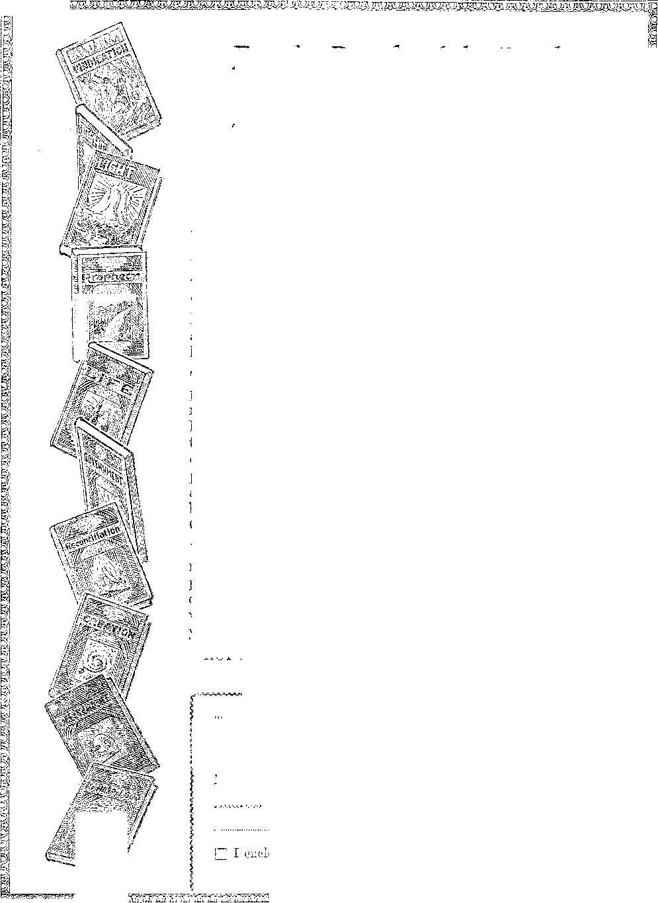

A JOURNAL OF FACT HOPE AND COURAGE
X1TO
is on: ' sie gM00c« 9 *
in this issue
TRADE BARRIERS
FROST IN THE AIR
EVENTS IN CANADA
AMONG THE USURERS
STATUS LYMPHATICUS
ALUMINUM POISONING AGAIN
BLOCKS TO PROSPERITY ■
every other WEDNESDAY
five cents a copy one dollar a> year Canada & Foreign 1.25
VoL XIII • No. 317
November 11, 1931
LABOR AND ECONOMICS
HOME AND HEALTH
Norwich Municipal Light Piaui . 76 Result 01 High Electric Rates . .76 Dover Municipal Light Plant , . 76 Do Tax on English Vacant Land . 76 Electric Rates, Canada and U. S. 77 Mould Remonetize Silver . . . 77 Ten Cents for Food and Clothing 79
Child Labor Benefits No One , . 84
Teeth of Mexican Indians
Hospitals Belong to People . . 81) Status Lymphaticus . . . . .86 Good Board at 75c a Wesk ... 86 Aluminum Poisoning at
White Plains ...... 87 Poisons Generated by Aluminum
Cooking . .......87
SOCIAL AND EDUCATIONAL
TRAVEL AND MISCELLANY
Frost in the Air ......76
Penology in Russia.....76
Where the Radio Listeners Are 77
French Encourage Wine Drinking 79
FINANCE—COMMERCE—TRANSPORTATION
Smuts on Financial Situation . . 76
Power Trust in Canada . . . 77
The Passing Financial Show . . 77
Gold Standard Overboard ... 78
Plenty of Money at 1-1/8 Percent 78
To Drive the Government Out of Business
World’s Largest Drydock . . . 76
Moslems in India May Rebel . . 76
Social Feeding in Russia .... 77
. Conditions in South Africa . . .77
What Former Priests Are Doing . 79
Events in Canada ...... 81
Thousand Miles up the Amazon . 88
News Items from Korea . ‘ . . .89
Pioneering in Central America . 90
RELIGION and philosophy
What Reverend Wyandt Missed , 75
Jews Expect Fulfilment of Ezekiel 79
Blocks to Mankind’s Prosperity . 91
POLITICAL—DOMESTIC AND FOREIGN
International Trade Barriers . , 67
Einstein's Cry for Peace ... 79
Wilson Planned World War Entry 80
It Seems So to Us
The Pope a Disappointed Mau . . 94
Tejeda Stands by His Law . . . 94
Admit They Are Roosters . . . 95
Published every other Wednesday tu 117 Adams Street, Brooklyn, N. A., U, S. A., by woodworth. knurr & martin
Conart.iicrs and Proprietors Adht'i.. in \.dams Street, Brooklyn, A. K. U, $. A. CLAYTON J. WOODWORTH . . Izhu ■ • ROBERT J. MARTIN .. Business Manager NATHAN I-I, KNt Secretary and Treasurer
Five Cents a Copt—$1.00 a Year Make Remittances to THE GOLDEN AGE Notice to Subscribers: For your uaq remit by postal or express money order. We do not, as a rule, send a< l.nov'>du;nont of’a renewal or a new subscription. Renewal blank (carrying notice of >xpit‘a<ion) is sent with the journal one month before the subscription expires. Chance of address, when requested, may be expected to appear on eodu- label within one month.
Published also in Esperanto, Finnish, Co.man, Japanese, Norwegian. Polish, Swedish, Offices in Other Countries
British........... . 34 Craven Terrace. London, W. 2, England
Canadian ...........40 irwin Avenue, Toronto 5, Ontario, Canada
Australasian......7 Beresford Rd., Strathfield, N. S. W., Australia
South African..........6 Lelie Street, Cape Town, South Africa
F.niered as second-class matter at Brooklyn, N. N.t under the Act of March 3, 1879.
Volume Xlh Brooklyn, N« Y.f Wednesday, November 1IS 1931 317
A LARGE part of the time of our statesmen in Washington is occupied with discussing the tariff, which affects more or less directly every citizen in the country and is therefore properly the subject for a somewhat elementary article in The Golden Age. We do not claim to have the wisdom to go deeply into this subject.
The levying of a tariff is confessedly purely a selfish act of national legislation. There is no pretense that one is ever levied for the benefit of anybody else. The only question at issue is as to whether, as a purely selfish act, its operation is to the advantage or disadvantage of the one who levies it.
Customs duties on goods inbound, outbound, or in transit date back thousands of years. With the Greeks the usual rate of customs duties upon both imports and exports was about 2 percent. In the Dark Ages transit duties were imposed on all goods passing through the central part of Europe. The European continent thus became covered with a network of customs lines, which lines still persist and greatly ham -per trade.
Tarif himself was a Mussulman chief. In the year 709 (A. D.) he invaded Spain with a force of 500 Moors and founded the seaport city of Tarifa, which soon became the place where customs were collected; hence the word ‘’'tariff”.
In the formation of the German Empire one of the great problems was to abolish the local transit customs, but it was finally accomplished. Transit duties have disappeared^ except in China. Export duties are of importance only in Turkey and India.
In the United States the first tariff act was passed on July 4, 1789. The average rate of duty then was lore, being about 8| percent. By the year 1918 the percentage of free goods had increased until it reached 75.51 percent. This is the nearest the United States ever came to free trade. At present it is far removed from the position occupied in 1918.
Before the imposition of the income tax, import duties made up nearly one-half of the federal receipts. They now make up about 15 percent, or about the same as those of France and Italy.
European Tariff Walls
We Americans like to talk about Europe’s foolish tariff walls. In America we have fortyeight states, stretching three thousand miles from east to west and fifteen hundred miles north and south, without any intervening customs barriers. Of course, the United States Constitution forbids the separate states from doing so, but if any state in the United States were to undertake to levy an import duty, export duty or transit duty as respects any other state a roar of indignation would go up from all over the country. Europe may have all the barriers she pleases between her twenty states, bur not Uncle Sam. Unde Sam is most inconsistent in this, as all can plainly see.
Arthur Henderson, British foreign minister, declares that the tariffs which are strangling Europe are doing more to continue the existing world depression than any of the other six causes which are the major reasons for the world’s economic suffering at this time. M r. Henderson styles these conditions as a state of economic war, a policy of madness.
Mr. Henry Bell, director of Lloyd’s and of the Bank of England, terms these European imposts “the machine gun, the high explosive, the poison gas of economic well being”. Walter Leaf, late chairman of the Westminster Bank of London, speaking sarcastically of the same levies and the statesmen who drew them up, .-aid: “I desire to compliment the statesmen and politicians of Europe on the success of their policy. They have endeavored to impede trade by every means in their po^ver. They have imposed embargoes, credit restrictions, tariffs and licenses. In a word, they have done everything in their power to interfere with the free flow of trade between country and country; and no one can doubt their success. There is, however, one fatal drawback to that achievement. It has meant the suicide of Europe/'
Seeing clearly that Europe’s customs duties interfere with her prosperity and that since the war these tariff walls are not only more numerous than ever before, but also higher than ever before, Mr. Briand, minister of foreign affairs of France, urged the formation of a United States of Europe, the principal object of which was to get rid of these burdensome rates; but when at almost the same instant Austria and Germany took him at his word and got together and arranged to do what he had advocated, the French were alarmed and incensed and demanded that the plan be abolished.
Proceeding along somewhat similar lines Great Britain, through her board of trade, only this year has proposed to all Europe that they reduce their customs rates on certain imports from Britain by 25 percent. None of the countries approached refused, and none of them accepted. They said in effect that they would be willing to consider the matter further if England would adhere to her free trade policy.
Meantime, besides the Austro-German customs union, six nations, Norway, Sweden, Holland, Belgium, Denmark and Luxemburg, have signed an agreement binding them not to raise existing rates or introduce new ones without consulting one another. The population of these countries is 28,000,000, and the annual imports and exports of the group is surpassed only by the imports and exports of the United States and Great Britain. .
Meantime also, regardless of artificial barriers, there are great business cartels, such as aluminum, enamel, linen, linoleum and artificial silk, which are uniting corporations in trade unions all over Europe.
Many politicians in France act as if they thought the most important thing they can do is'to hinder the economic recovery of Germany, and therefore they do not hesitate to oppose the Austro-German customs union; and'even when Germany’s financial collapse was imminent and moments were precious if chaos was to be averted, they stubbornly insisted that the union must be given up or they would not lend a dollar.
With rare patience and common sense the
German statesmen ask, If the doing away with tariff barriers is desirable for the continent generally, as is contended by most economists, is it not commendable for two nations to make a beginning of the good work as Germany and Austria have done ?
The legality of the Austro-German customs union was referred to the Hague Court for an advisory opinion (and was condemned by it), but this would certainly not have been except for the hue and cry which France made. Germany is Austria’s best customer, and it is almost essential to the welfare of both countries that the duties between them should be abolished.
In Favor of Free Trade
We do not attempt to give all the arguments that are advanced in favor of free trade, but we give some of them. The free trader sees the ultimate consumer bearing a very much heavier load than he is aware of, which load is due to the fact that there is no way to control the prices which he must pay.
The free trader likens the American workman to the small boy on a hunting trip who is occasionally allowed-to hold the gun. The time when the workingman holds the gun is for the few minutes in which he is permitted to play with his pay envelope, but as soon as he begins to use the contents of it, he loses from 40 percent to 60 percent. Because it serves the purpose of giving the great concerns undue power to fix prices, the protective tariff has been called the mother of Socialism.
The natural operation of high duties in every country is to confine the economic life of the country strictly to its own borders and, carried to an extreme, it would mean that there would be no imports and no exports.
It is conceded that there, was a time when Europe had to have the foodstuffs and raw materials produced in America, but this necessity no longer exists. Nobody now has to buy anything from Uncle Sam. Since the war American business has been so organized as to demand a foreign outlet for a part of its products. The foreign markets provide the extra volume of sales needed for a profit. When these foreign markets are eliminated the profits are eliminated.
A few big financiers,'like Mr. Ford and Mr. Mellon, can afford to build factories abroad, but the small American manufacturer cannot do this, and the American workingman also has to stay at home. The' natural result is a sluggish home market, a greatly restricted foreign export market, and high prices on articles consumed.
The United States Chamber of Commerce has recently urged the lowering of American customs duties and the admission of a larger quantity of foreign competitive goods, believing that trade the world over would be advantaged thereby. The Nation believes that the . American rates are the partisan wheels of the " .....protective and privileged interests and that the
American imposts must be lowered in order to save Europe, to save the United States and “to __ restore to it not only the opportunity of economic well-being and progress at home but the — -........ good will of the world”. It also says bitingly,
“As a creator of ill will against the United ' States our tariff legislation is unsurpassed.”
..............In the United States the making of customs laws has always been largely a matter of poli-_ tics, and since the first protective tariff was passed, in 1816, the tendency of the rates has ever been upward. Up to 1922 the imposition of customs on foreign goods was undertaken on the basis of protecting American infant industries, but as these industries now dominate Z? ' the world this excuse no longer holds good and the rates are built on the idea of equalizing the ..... costs of production.
When the 1922 law was passed. Congress was in a panic for fear of German dumping. The idea of helping Germany to build up some business, so that she would have some way of paying debts, seems not to have been entertained.
The Present American Tariff Law
The present American customs law is a book of 366 pages. It required thirteen months of congressional debating, and cost in congressional salaries no less than $2,000,000.
Peter Fletcher, president of the National Council of American Importers and Traders, Inc., declares that the United States in its customs acts of 1922 and 1930 is responsible for having brought about the greatest world-wTide war of duties in history. He says, “If you will consider what has happened since we passed that iniquitous law and examine the tariffs of other countries, you will find that, with one exception, every important commercial country has built, in retaliation to our tariff of 1922, high tariff walls of its own, mainly aimed against us.”
The law of 1930 put in operation the highest rates in the 141 years of American protective duty history. The general level of rates of the 1930 law is 41 percent of the value of all dutiable imports. This is 20 percent above the law of 1922, 100 percent above the law of 1913, 500 percent above the law of 1789, and 2,000 percent above the rates commonly fixed in ancient Greece and Rome.
Sir George Paish, of London, one of the world’s best-known economists, in an address before the American Academy of Political and Social Science, made the statement that the last increase in American customs tolled around the world like a death knell, causing consternation to millions of people who wanted and needed American trade.
The enactment of the present American law was accompanied by more acts of shamelessness on the part of big business than any other tariff ever enacted in American history. The result that would follow the passage of this bill ■was so manifest that 1,028 economists and professors of economics sent a joint warning to President Hoover on the ill effects upon America which would follow the passage of the bill, and which have followed it.
It is said of the present bill that it was debated longer and reviled more than any other measure of its kind ever passed. When first started on its way through Congress it was supposed to be for the benefit of agriculture and the stimulation of industry, but confessedly has helped neither, but has operated to the disadvantage of both.
Specific Instances of Dissatisfaction,
Inasmuch as any customs legislation is purely selfish on the part of the government that enacts it, it is easy to find in any such legislation cases where injustices are done, and this becomes particularly easy in the case of the law now in force in the United States.
The Carded Woolen Manufacturers Association declares that wool growers and manufacturers have so fixed the duties that some rates are now as high as 387 percent, although because of the complexity of the schedules the public does not suspect this.
The American Manufacturers of Toilet Articles, always heretofore supporters of the high rate policy, at their annual convention this last spring reported that the huge American tariff walls have made Americans and their products unpopular the world over and that today it is a disadvantage to be an American with goods to sell in other countries.
The rates of the new law are so high that in one year 87 American companies opened branch factories in Canada, which they were forced to do because Canada retaliated against the United States by herself imposing high tariffs where formerly she was content with low ones. All together, 600 American companies have now established branches in Canada in order to avoid the consequences of the Canadian law.
In a book entitled Onward Industry, written by James D. Mooney, vice-president of the General Motors Corporation, and Allan C. Reiley, former advertising manager of the Remington Typewriter Company, the claim is boldly made that America's old traditional policy of protection has ceased to protect and has begun to destroy.
The rate on lace was made so high that 3,000 women in Vienna, left in reduced circumstances by the World War, lost their market when the duty on this form of needlework art was raised to 95 percent. The industry was completely killed until the treasury department rated this form of lace, petit point, as a work of art and reduced the tariff to 40 percent.
When the lace schedules were originally made the laceworkers at Calais, France, faced ruin. They prevailed upon the French government to threaten a prohibitive tariff on American autos and parts. The threat worked, and the rates were made less unreasonable than had been originally proposed.
For some reason that nobody can now explain, the Jewish people require black granite for grave markers. There are a few producers of this particular kind of granite in eastern Pennsylvania, and to please them the'rates were so hugely increased that now some of the poor Jewish people are obliged to use inferior substitutes.
As an illustration of how an exclusive tariff leads peace-loving people to retaliate, it is related that American ship manufacturers tried to get the millionaire yacht building business away from Hamburg by having the existing tax increased 500 percent. Immediately the yachtmakers went to the legislative body at Hamburg and proposed that licenses be refused on all American autos in the province. There were about 5,000 cars in the district which would have been banished, and the doors would have been closed to further importations. Thereupon American auto makers got busy with the Senate, with the result that the yacht builders were loft without any protection at all.
The Tariff Commission
After thirteen months of log-rolling unequaled in American legislation, Congress finally turned the result of its work over to the president. Having reason to feel none too sure of the wisdom and justice of some of the imposts levied, the president was given a measure of control of the situation through a commission which makes jobs for a number of politicians and gives opportunity for the modification of rates which are proven to be too burdensome or for other reasons unworkable. The president has the right, after investigation, to change rates within a margin of 50 percent set by Congress.
There are said to be 3,300 duties involved which affect no less than 21,000 items. After a little more than a year 110 investigations were completed and the results of twenty-two of these investigations were reported to the press. Critics have figured out that if the commission works as industriously for the next seventy years as it has for the past one, it will just about be able to make one complete investigation of the bill. Perhaps by that time America will need fresh legislation on this subject.
Declines in 'Foreign Trade
Something has hit American trade all over the world, and critics of the American tariff policy feel sure that they know what is the trouble. Almost all the nations of the world following the American policy are moving their rates upward, with the object of protecting home industries, and with the result of strangling trade in every direction. '
Harold Fields, chairman of the executive committee of the foreign affairs forum, says that since the adoption of the present law American foreign trade has fallen off 33 percent and motor exports have fallen to half their former value, and that tariff reprisals have either been put into effect or are contemplated in thirty nations.
Everywhere one turns there are heavy declines in America’s foreign trade. Exports to Japan, China, Australia, Philippine Islands, Cuba, Italy, Germany, the Netherlands and France have fallen off sharply. Among the countries that have either revised their customs tariffs upward or are planning to do so are Spain, Mexico, Cuba, Italy, Chile, Austria and Switzerland.
As Respects Canada
The Canadians have become convinced that the United States does not properly value the $900,000,000 worth of goods which Canada has annually imported from this country. Within a year after the new law went into effect there was a decline which indicated that about one-third of this business was cut off, and tariff barriers were erected which it is expected will ultimately cut off another one-third. Thus Uncle Sam disposes of his best customer, the one that has hitherto provided a market for one-quarter of his exports.
If one visits Canada while tariff legislation is under way in the United States he immediately becomes aware of the great interest and concern which is felt. The Canadians have come to believe that high American duties are a menace to Canada’s economic independence. In consequence they have boosted their own rates, making 200 changes, which mostly affect the United States.
The new rates are intended to exclude from Canada millions of dollars’ worth of imports, canned goods, steel and coal. In the effort to square herself with Uncle Sam, Canada has herself hit countries that are retaliating in turn against Canada for what they regard as her now unreasonably high rates.
As to France
No doubt largely moved by America’s example, France has swung around into the list of countries that are following a protectionist policy. She watches American tariffs closely, retaliates plenty, and can hardly be blamed for so doing.
Since the Smoot-Hawley law went into effect she has made her rate on motor cars so high that it is extremely difficult for American cars to compete; and she has practically closed her market to American canned salmon. This latter was accomplished by the simple device of requiring American canned goods entering France to carry an indication in French of the country of origin, in raised or sunken letters.
As to Argentina
Our principal market in South America has been Argentina; but with the inauguration of the new law’ the South American countries made tariff reprisals on a large scale. Certain foods . which previously entered the country duty-free now carry a duty of 32 percent. The market was closed to American eggs by a new regulation requiring the individual stamping of every egg. Tractors formerly free must now pay a duty of 32 percent. Woolen and cotton yarns have been increased from 5 percent to 32 percent. .
These and other huge increases in the Argentinian tariff, brought on by Uncle Sani’s example, have led to much indignation in other South American countries, namely, Brazil and Paraguay, which are retaliating against Argentina as the latter retaliates against the United States.
The probable general effect as far as Argentina’s trade is concerned is that much of it that has been coming to the United States since the World War will now gradually return to Great Britain. Of course, Uncle Sam will put up a fight for it, and has just bought a palatial home for his ambassador in Buenos Aires and purchased land for the erection of an eightstory office building near by.
As to Britain and the Colonies
"While the influence of America’s high tariff has spread all around the world and has resulted in greatly increased rates in Australia and New Zealand, the same as it has done in Canada, yet Britain herself still stands for free trade, though there has been for some years a determined effort to swing; her over into the protectionist group. Most British statesmen still remain convinced that free trade is the best policy for Britain. David Lloyd George says, “If Britain abandons free trade now she will have abandoned a great trust. She will have bartered away a great inheritance for a mess of pottage; and what a mess!” He is fond of citing the United States as a horrible example of what protection can do to a country 'where from his point of view it results in temporarily distended pocketbooks and permanently extended breadlines.
The London Morning Post calls on all men of British blood wherever they may live to unite against the peril of high tariffs as they united against the German peril in 1914.
As to Russia
Canada is. Uncle Sam’s best customer; the United Kingdom is the second best; and Russia is the third best. Last year Russia placed in America the largest order for farm machinery ever given for export at one time. In the past year the sales exceeded $20,000,000 a month. What Russia bought from America amounts to forty-six times as much as what America has bought from Russia.
It would seem that this is a pretty good kind of customer, but American big business (with which there is no similar aggregation of pigheaded short-sightedness to be compared) has done everything possible to discourage this business, which is now being gradually turned over to Germany. It is plainly evident that Russia resents American attempts to embargo and discriminate1 against the few products she sells us. She would be more or less than human if she did not at least give other nations a chance to get the business which America might otherwise have had.
Senator .Wheeler declares that the total amount of wheat imported into the United States from Russia during the year 1928 was only 29 bushels, and in 1929 it was only 12 bushels. He thinks the American people should know that whatever else the Russians are doing with their wheat they are not sending it to America. Incidentally we remark that the total Soviet wheat exported in 1.930 was 40,000,000 bushels; while the wheat exported from the United States in the same year was 182,000,000 bushels.
Possibly influenced by American big business the Canadian government has shut out all imports of Russian coal, wood pulp, lumber, timber of all descriptions, furs and asbestos. S. R. B. Bennett, the prime minister of Canada, gives as his reason for this embargo that “the government is convinced that there is forced labor in the cutting and transport of timber and in the mining of coal, that political prisoners are exploited, that the standard of living is below any level conceived of in Canada, and that, broadly speaking, all employment is in control of the Communist government, which regulates all conditions of work and seeks to impose its will on the whole world. This is communism, its creed and its fruits, which we. as a country oppose and must refuse to support by interchange of trade.”
The nearer a country is to Russia, the less it seems to be frightened as respects dealing with her. Germany does not seem to be afraid, and Italy has signed a renewal and expansion of commercial interchanges which is expected to result in about double the previous trade. Also, the British government is determined on maintaining its trade relations with the Soviet.
The import duties of Russia are probably the highest in the world, the intent manifestly being to compel the Russian people to produce within the borders of their own country everything they require.
The Protectionist Arguments
The argument of the protectionist is that a high tariff enables a manufacturer to concentrate on the production and marketing of goods without any danger of having to meet cheap foreign competition.. It will hardly be denied that under a protectionist policy America has become the workshop of the world and a place in which wages have been at an immensely higher level than elsewhere.
There seems to be no doubt that the textile industry was benefited by the rates of the Smoot-Hawley tariff law.
The protectionists claim that most civilized countries have protective tariff rates, many of them higher than most of the rates provided by the American law, and they ask the question, If we greatly lower our tariff laws while they steadfastly maintain theirs,' how are the American people to be benefited? This is selfish reasoning, and it is this kind of reasoning that has filled the world with armaments, but it cannot be denied that there is some truth to it.
The protectionist also points out that while American capitalists have'invested $17,500,000,-000 abroad upon which they would naturally like to make large profits, and upon which they surely would make large profits if America were suddenly to go on a free trade basis, yet the money which they have invested abroad is. only 5 percent of America’s wealth, and it is more important that the 95 percent should not be sacrificed than it is that the 5 percent should be especially eared for.
The protectionist points out that, unless a group of commodities is absolutely excluded by a customs law, the rates soon come to be taken as a matter of course and all quarrels are forgotten until a new bill is in the making. The protectionist also points out that lowering the American duties and admitting larger quantities of foreign goods would not lower a foreign tariff or create a market for a dollar’s worth of American goods in foreign lands.
The protectionist further claims that per capita the consuming power of Europe is one-quarter that of the United States, while the. consuming power of Asia is one-tenth that of the United States, and that therefore the United States market is inconceivably the best market in the world, and a market which should be protected at all hazards, regardless of what happens to foreign trade.
The shoe manufacturers claim that the protection which they now receive of 40c per pair is not enough, as the labor cost of a pair of shoes in America is 90c to $1.10: while in Czechoslovakia the labor cost of a pair of shoes is only 28c and the Czechoslovakian shoes can be brought in here and sold for less money than/ the American shoes on account of this great difference in labor cost.
Quite likely, also, when the rates go up again there will be higher duties on copper, to protect the copper interests of Arizona; and there will be higher rates on oil to protect the oil interests. It is hard to see how the United States is ever going to be brought down to a free trade basis.
Getting by the Customs Officer '
Once a customs law has been passed and the ■ customs officer is at his post, he straightway becomes a most unpopular man. Not infrequently the traveler whose baggage is to be examined looks upon him as almost a personal enemy. Importers are always trying to figure some way to get around the regulations.
The scheme which the sugar importers use is to start from Cuba with a boatload of sugar. On arrival at the United States, just outside the three-mile limit, they add waler until the contents of the vessel, instead of being sugar, become a watery syrup testing less than 50 percent sucrose and calling for a duty of only onefifth that of sugar. As soon as the ship has passed the customs it is rushed to the refinery, where its cargo is reconverted into sugar before fermentation can start.
Most returning Americans pay 75 percent to 100 percent more duty on the goods they bring back from Europe than they need to pay, because they are entitled to bring in these goods at the wholesale foreign value instead of the retail. As but a few of them know the wholesale price, and the customs officials do not tell them the difference, the United States government receives some $2,000,000 a year in customs duties to which it is not properly entitled. Some do not know that families have the right to travel as units and all dependents over twenty-one years of age may group their individual exemptions of $100 each.
The Italian government now examines baggage in fifteen cities and it leaves the country under seal, thus saving the trouble of having trunks examined at frontiers. Atlantic voyagers are now favored by arrangements for examining their baggage during the voyage up the St. Lawrence. No doubt the time will some time come when for most vessels there will be a regular customs service on board for the whole Atlantic.
The customs inspectors are under rigid rules, very severe rules it sometimes seems, too. For instance, the American people may not hear the orchestras which play on the French or German steamers, at least not on their own instruments (except over microphones rigged up in the ships on which they play). In other words, the customs regulations forbid the temporary removal of musical instruments from the ships because they are not manifested.
An aviator who came into New York with Iris aviation compass filled with four ounces of pure alcohol was forbidden to land the compass until the alcohol had been removed. However, when enough officials had been seen and it had been explained to each that to drain the alcohol from the compass would completely upset thecalibration of the instrument he was finally permitted to take it away.
A New York girl engaged to an Italian nobleman was not allowed to bring in her engagement ring for the month in which she then expected to remain upon American soil. She had to leave her ring with the customs official until she took her steamer back to Italy.
At the border land between Germany and Austria a young woman was asked to pay 35c for a liandful of flowers which she was carrying with her. Annoyed, she flung the flowers out of the bus window; but as they landed on German ground she was compelled to climb out of the bus and throw them back into Austria before permitted to pass untaxed.
A college boy in Montreal sent back to his home in Chicago an overcoat four years old which had originally cost $24. The coat was sent back to be given to the poor. On arrival his mother was required to pay a customs tax of $7.55, and, when she protested, was told that the tax must be paid on old clothes the same as on new ones.
At the port of Brest, France, in the height of a storm, a tug, which had already saved a number of vessels but had broken all its tow ropes, put into port for new ones. For not attending to the customs formalities properly and for hurrying out to the rescue of another ship in trouble, the captain of the tug boat was lined $20 for violations of the rules of port.
Last fall, making up baskets for needy families, friends of the poor at Niagara Falls bought 75 pounds of turkeys across the border and were surprised on The return trip to find that they could not bring the turkeys in without having to pay $6 in duty charges. They finally persuaded the customs men to contribute the necessary $6 and the turkeys were admitted.
Seamen may not bring souvenirs into their home port if they are omitted from the ship’s manifest. Airships engaged in foreign commerce may not land except at designated ports of entry. When the Graf Zeppelin landed in America everything of a plant and vegetable nature aboard was confiscated and destroyed.
A 100-percent penalty is imposed by customs inspectors on undeclared articles in the baggage. Customs agents in America may not take tips. If they do, they lose their jobs. The job of customs officer has many disagreeable features connected with it; especially is this true of customs officers serving the United States, on account of the high tariff wall that surrounds the country and the great number of people that enter.
The Customs Bureau figures show that 646,-480 passengers arrived at the one port of New York by boat during the year ending Juno 30, 1930. The baggage of every one of these passengers had to be examined and passed by customs officers.
Smugglers of Diamonds and Jewelry
It is estimated that diamonds valued at from $20,000,000 to $40,000,000 are annually smuggled into the United States. At AnUverp, the center of the industry, the organized, legitimate diamond dealers united in testifying to the tariff commission that one diamond was smuggled into America for every one that went through the customs. The syndicate engaged in the smuggling "was so firmly entrenched and so sure of results that it furnished security for safe delivery equal to the value of the diamonds.
Because the smuggling of diamonds has such a powerful effect upon honest dealers, and because the government is virtually powerless to stop it, the American Jewelers Protective Association asked Congress, rather oddly, to give it less protection rather than more. They requested a return to the old rates of 10 percent for cut stones and free entry for uncut stones, which request was granted.
In the year ending October 1, 1930, fourteen illicit diamond merchants and carriers were caught by the customs service. A single carrier 'has been known to deliver $500,000 worth of diamonds on one trip. One sailor who brought in $25,000 worth of diamonds in a can of sinok- : ing tobacco received only $5 for the service which he rendered, and, when informed that most smugglers’ accomplices are better paid, he helped the authorities to trap his employers.
In 1929 a packet of cut diamonds valued at $10,000 was found in the mouth of an assistant pantry steward. The same year a nervous woman was caught with a diamond bracelet sewed in the fur collar of her coat. Sho kept putting her hand back to see if the bracelet was still there, and put it back once too often.
In the year 1931 uncut diamonds to the value of $7,000 were seized because they had not been, declared. Under the new laws, these diamonds were not dutiable, but the penalty for failure to declare them was not only the loss of the diamonds but an additional penalty equal to their value.
On one occasion the shoe of an employee aboard ship was used to bring in $12,000 worth of unset gems.
Every year the diamond squad has made the national treasury richer by about $700,000.
In the year 1930, two United States customs appraisers confessed to receiving more than $7,000 in bribes for allowing more than $1,000,-
000 worth of Swiss watches and watch movements to enter the country duty-free. These two men were on the payroll of a large smuggling ring and received $500 each for every shipment of contraband they allowed to enter.
Tobacco and Other Smugglers
In Belgium the cost of tobacco is 20c a pound: in France the price is $1.20. As a consequence, a widespread smuggling’ traffic has been built up. The smuggling is done by dogs that are carefully trained for the purpose. The smuggler’s dog carries ten pounds of tobacco. If the dog gets through the lines, the smuggler is $10 ahead.; but often the dog is killed, because the government employs powerful canines for just that purpose.
The smuggler’s dogs are always hungry when they start for home. They are fed well at home and not at all in Belgium. The French customs men have caught many of these by bending over a young sapling and hanging a loop of i'ope from it. A piece of meat suspended inside the rope serves as bait and releases the trap when it is touched. If a dog is poorly trained and stops to nibble at the meat he suddenly finds himself caught and jerked into the air.
The customs men get a bounty of 12c for the left hind foot of every tobacco-smuggling dog killed. ‘ ~
Another type of tobacco smuggler carries forty or fifty pounds of tobacco on his own back and depends on his own animal to pull him along at double the pace of his pursuers if he is detected.
The British have a tax on tobacco, and so it is smuggled into Cornwall as are cigarettes and other goods into Canada in exchange for the liquor smuggled into the United States. At Gibraltar, the British rock at the edge of Spain, one man at one time ran two tobacco factories and almost the entire output of both factories was smuggled into Spain.
Foreign piece goods, cotton yarns, metal wares and other foreign imported goods are being smuggled into South China in vast quantities. As Hongkong is a free port, and as the police searches along the Hongkong seacoast are confined to illicit opium, arms and ammunition, the smugglers are able to load their goods from one boat into another without the least difficulty. There is considerable smuggling of silks and laces in all parts of the world.
Some years ago a party of nuns bound from Montreal to Providence were discovered with several thousand dollars’ worth of lace sewed beneath their Mother Hubbard gowns, Their lawyer explained that they were leading such a holy life that they didn’t understand what they were doing; and they got away with it on that basis.
A Mr. Bernstein, who seemed a little bit overstout, was stopped by a customs guard in New York who discovered that he had sixty new silk neckties hung on little hooks inside his garments, and a search of his good lady disclosed a similar number of ties: also some silk handkerchiefs and articles of jewelry.
In 1930, the president of the Harriet Hubbard Aver Corporation, a cosmetics concern, turned over to the United States customs a certified check for $213,286, representing penalties, forfeiture values and duties on undeclared and undervalued goods brought in on the French liner He de France. This penalty is the largest smuggler’s penalty in the history of the port of New York.
What Reverend Wyandt Missed
ACCORDING to reports which reach us, on
August 27, 1931, Reverend Herbert L. Wyandt, 211 North West Third St., Richmond, Indiana, pastor of the Second Lutheran church of that city, punched R. B. Lathrop, of the same community, when the latter tried to bring to his attention the booklet The Kingdom, the Hope of the World. Lathrop was amused, and only smiled and went on. And only now, and by this means, are we telling Reverend Wyandt how nearly he missed something. The man that he smacked was light-weight champion boxer of the United States navy during the World War. Just suppose now that he had not been, as he is, one of Jehovah’s witnesses. Somebody’s tail feathers would surely have been eradicated and his black night shirt laid low in the. dust. He might even have got a black eye. But it would have given him something to talk about, and that would have been worth something, maybe another quarter or so in the tin cup. And his audience might have been bigger, too.
Frost in the Air
Baby Girls Slain in India
BECAUSE in years past the natives of
Northern India have been in the habit of slaying their baby girls, because the boys are prospectively of more value, the maharajah of Kashmir has offered an acre of land to every father of a baby girl.
Southampton to Have Largest Dock
SOUTHAMPTON, within the next four years, will have the largest drydock in the world, the largest caryard in the world, and the largest port in the world. The $40,000,000 job now under way will employ three thousand men and involves the shifting of 20,000.000 tons of sand.
Moslems in India May Rebel
THE Moslems, of whom there are 70,000,000
in India, are alarmed and exasperated by the possibilities of peace between the followers of Mahatma Ghandi and the British government over the conduct of Indian affairs. They threaten that if they are left to the mercy of the Hindus there will be civil war all over India.
Insanity Increases Among War Veterans
FIFTEEN years hence, at the present rate of increase, the number of American veterans of the World War who will be ill with nervous and mental diseases will approximate 42,000 cases. The increase in insanity among ex-service men accelerates with age. War destroys men, body and mind.
Norwich Municipal Plant
THE Norwich (Connecticut) municipal light -L and power plant is a money-maker, annually showing profits for the city of about a quarter of a million dollars. Power Trust men have been in the city recently trying to bluff the mayor into selling the plant to them. They can make good use of these profits.
Contest on Between Missouri and Kansas
HpiIE contest is on between Missouri and Kansas, to see which will have the more automobile wrecks. For two hours on August 23 the Rev. Martin J. Foley of Kansas City, spent his time blessing automobiles. The city is on the edge of the two states, Kansas and Missouri. Whichever state had the most autos in the procession will have the biggest bill for wrecks.
As a Result of High Electric Rates
AS A RESULT of high electric rates 30 percent of the population of the United States still live in unwired homes and the average home that is w’ired for electricity is compelled to keep its requirements down to about onetenth what it would like. Ninety percent of the farms are yet without electricity.
Dover Municipal Light Plant '
A T THE Dover (Ohio) municipal light and power plant, on a domestic rate of 6c per kilowatt hour they have made so much profit that $60,000 was used for paving the streets and the balance in the plant’s fund has increased to $78,000. Now they must make a further ent in the domestic rate. Isn’t that too bad?
General Smuts on the Financial Situation
General Jan Christian Smuts, of South
Africa, discussing the world financial situation, said recently: “Of the gravity of the situation, there is no doubt, and in some ways it is as dangerous as the World War itself, and may in the end call for the same spirit of national and personal sacrifice.”
Penology in Russia
NEW features in the treatment of criminals
in Russia are that there is a radio in every cell, and every prisoner is given two weeks’ vacation a year, in which he may go where he likes and do what he pleases. Every prisoner is trained for a job, so that when he comes out. he will be fitted for something.
Germany’s Population Shrinking
OF THE recent marriages in Berlin 60 percent are childless, and the average number of children per family is less than two, whereas a few years ago it was about four. It is estimated that in another thirty years the population of Germany will be down to about 45.000.- ■ 000. ' '
No Tax on English Vacant Laud
AMERICANS learn with surprise that in
England a man may hold thousands of acres idle for fox hunting, “shootings” and the like and never pay a cent of taxes on it. The owner merely pays taxes on the income he receives from the land, and not on the land itself, In America all land, idle or not, is taxed.
Electric Rates in Canada and U. S. ■
npiIE average rate for domestic electric light and power purposes is 6.5 cents per kilowatt hour. This results in American householders’ paying more than three times as much for house current as the householders of Ontario pay. In Canada 87.7 percent of the current sold to householders for lighting and cooking was at 1.9 cents or less per kilowatt hour.
The Power Trust in Canada .
THE Power Trust has made its appearance in Canada, in the effort to grab the flow of the St. Lawrence for power purposes. Before a spadeful of earth was turned it expended twenty million dollars in graft, in the effort to get as many political leaders as possible on its side. And then some honest Canadian scpiawked, and now the whole country is fighting mad.
The Teeth of Mexican Indians
THE Indians of Mexico never brush their teeth, but sometimes wash them with water, using the forefinger. As they live on fruits and vegetables, their teeth are perfect and beautiful, and able to crack almost all kinds of nuts. The fruit juices, especially of grapefruit, are natural tooth cleansers. There is no evidence that tooth pastes are of any value in the care of teeth.
The Low Electric Rates in Seattle
AT SEATTLE, Washington, in 1930, the average rate per kilowatt hour of the municipal electric light and power company was 1.784 cents; yet, despite these low rates, after all expenses had been paid there -was a net balance of $1,124,548. As a result of the low rates Seattle housewives use more electric ranges than any other city in the world, irrespective of population.
The Passing Financial Show
THE present financial show is passing, or seems to be, if one may judge from the figures. In the year 1928, in America there were 491 bank failures, involving deposits of $139,000,000. In the year 1929 there were 642 bank failures, involving deposits of $235,000,000; and in the year 1930 there were 1,345 bank failures, involving deposits of $86.5,000,000. In August, in the city of Toledo, the four largest banks in the city closed their doors at the same time.
Social Feeding in Russia
A PPROXIMATELY 12,000,000 workers and their families are now fed in Russia in public dining halls, where meals are obtained at rates of from 13c to 40c. Within the next three years 300 new factory kitchens and 4,000 dining halls will be built, to further provide social feeding of 25,000,000 people.
Where the Radio Listeners Are
npiIERE are 10} million radio sets in the
United States, 3} million each in Britain and Germany, 2 million in France, 1 million in Russia, and -} million each in Denmark, Austria, Sweden, Argentina and Japan. Denmark has the largest number in proportion to her population.
Would Remonetize Silver
PpiIE Foreign Policy Association, Washing--*■ ton, surprised everybody by expressing the fear that very probably the demonetization of silver was a mistake after all, and that, now that the world is all upset financially, perhaps one thing that might help it is to remonetize the white metal.
Paying Taxes with Bread and Milk
IN POMERANIA, Germany, farmers may pay a portion of their taxes in bread and milk, which are delivered to the unemployed at slightly less than the market prices. On account of elimination of the middleman the farmer receives better prices for the milk so marketed than for that which is sold through the usual channels.
Conditions in South Africa
TN SOUTH AFRICA 1,500,000 whites of British and Dutch ancestry live in close contact with 5,000,000 blacks. The whites have laws which bar the blacks from many occupations and services. The whites are paid $5 a day; the blacks, $5 a week. All the hardest work is done by the blacks, and the wages paid are in most cases insufficient for food and the barest necessities of life. Jobs in the railway and postal service formerly held by blacks are being made exclusively white jobs. Segregation is everywhere. It is illegal for a black man to ride in a motor car in which a European is riding. Seems as if the job of a missionary among the natives of Sout.fi Africa would be a hard one.
Getting Rid of God’s Mercies
T LOS ANGELES recently several shiploads of bananas were dumped into the sea, to improve the market. Off the coast of Brazil 530,000 sacks of coffee have been thrown into the ocean, to improve the market. Hundreds of carloads of lemons have been destroyed, to improve the market. Meantime millions are without the necessities of life. What a crazy house!
Patriarch of Jerusalem Dies
THE patriarch of Jerusalem is dead, leaving behind him a fortune of $20,000,000 made up of gifts brought by travelers. He once startled religionists by saying black people have no souls and therefore missionary work among them is wasted. The patriarch had no soul, either, and that is a joke on him. No man has a soul, but every man is a soul, be he black, white, red, blue, green or speckled.
Piling the Burdens on the Weak -
TN THE city of Dayton, Ohio, James M. Cox, -*■ once democratic candidate for president, has a home costing $507,850. It is assessed at $101,570, which is just 20 percent of its cost. In the same city, so the People’s League of that city declares, nine other homes, costing collectively $110,249, were assessed at $88,200, or 80 percent of what it cost to build them. Now won’t somebody please show us all just why a rich man should have his property taxed at 20 percent of its value tvhile an ordinary man has to pay taxes on 80 percent?
Gold Standard Overboard
S WAS to bti expected, practically all the nations of earth have thrown the gold standard overboard and gone in for cheaper money. Following the lead of Great Britain, four nations went over in a single day, and at this writing only the United States, France and two other nations are holding the bag, and one of the remaining nations is expecting to follow the majority. Meantime, Uncle Sam has half the gold of the world in his storerooms. It will be nice to look at after all the rest of the nations of the world have thrown their gold into the streets. It is admitted among financiers that the straw which broke the back of the British financial camel was the mutiny in the British fleet when their wages were cut.
How the World’s Gold Is Shipped
HE world’s gold is shipped mostly in kegs of $50,000 each. The contents of the keg as it leaves New York are seven bars or slabs each of about $7,000, each slab enclosed in a linen bag. Foreign coins when received are all melted and converted into bullion. Gold from abroad usually comes to America packed in boxes, but it goes out in oak kegs that cost $3 apiece.
A Head of Lettuce a Day
r. St. Louis Estes, famous dietitian, recommends the eating of a head of lettuce a day. In it is found all the essential vitamins, together with calcium, phosphorus, iron, iodine and other minerals. Its heavy content of alkaline ash makes it a splendid food for counteracting acidosis. Lettuce is on the Bethel table once or twice a day, the year around, and eaten freely.
Plenty of Money at 1-1/8 Percent -
HE first of September the government offered $300,000,000 in debt certificates bearing 1-1/8 percent interest. The offering was oversubscribed four times, which again shows that there is an abundance of capital, and that the people that have it are extremely nervous for fear they will lose it, and are willing to take minimum earnings on it, only so that it remains as safe as possible.
Digging at the Foundations
enry Newton, evidently a policeman, writing in the Houston Press, says*. “No one in Texas or the United States denies that the working men and women are the foundation of our government, and furnish our food, but capital and public sentiment are busy day and night destroying this foundation and have set up a system of slavery that has long since put to shame anything that ever existed in any so-called civilized country. There ought to be a law to compel every man and woman to serve-three months each year at night twelve to fourteen hours on police duty before they would be allowed to preach, practice lav- or medicine or run for governor or president. We are heading straight into the bloodiest civil revolution in our history, brought on by the greed of our wealthy citizens without one protest from the so-called Christian ministers.”
What the Former Russian Priests Are Doing JACK HOWARD, newspaper correspondent, says of the former Russian priests: “They are working in factories along with the rest of the proletariat or doing other work that fits into Communist plans. Those who clung tenaciously to their church are not doing so well. Many of them have become beggars. Others are peddling papers or souvenirs on the Moscow streets.”
French Encourage 'Wine Drinking
OT unmindful of the fact that seven mil--A-^ lion of her citizens make a living in the wine business, and trade not being as good as it might be, with America, the French government, through its school inspectors, is making special efforts to impress upon the younger generation the importance and wisdom of drinking wine regularly. The claim is made that thus Ilie temptation is removed of imbibing drinks of stronger alcoholic content.
Einstein?s Cry for Peace
JN A LETTER to the Conference of the War Resisters’ International, held at Lyons, France, Professor Albert Einstein said:
All the nations of the world are talking about disarmament. You must lead them to do more than talk. The people must take this matter out of the hands of statesmen and diplomats. They must grip it in Their own hands. Those who think that the danger of war is past are living in a fool’s paradise. We have to face today a militarism far more powerful and destructive than the militarism which brought the disaster of the Great War.
How the Dole Works in Practice _
HA. L. Fisher, well known publicist, says of
® England, “There has never been any time in the history of this country in which the population lias been better fed, better clothed, better housed, better amused or better educated than at present.” Pointing in the same direction Rev. J. Ernest James, of Kensington Chapel, London, in a sermon at the Riverside Drive Church, New York, explained to his wealthy auditors that :job insurance was adopted before the World War and long before Great Britain had a Labor government: that it is here to stay, and that other countries must follow where Britain lias led the way: it is a plain duty which men owe to each other to banish the fear of unemployments
Taunton Rock Inscriptions Deciphered
Gp.HE Taunton rock inscriptions have been deciphered and disclose that they were placed there in the year 1511 by a Portuguese navigator, Capt. Miguel Gorte Real. They consist of the Latin words “Voluntate dei hie dux indorum” which, roughly translated, means: “By the will of God I became here the chief of the Indians.” The Portuguese were thus in New England more than a hundred years before the Pilgrim fathers.
Restoring Calmness in the Congo
TN A LARGE district of the Belgian Congo
the natives, since the depression, were given but three-fourths the amount they had previously received for oil nuts. Being worshipers of Satan, they cut up one European and dried the pieces to make charms. Soldiers were sent for, and in a few days 982 natives were killed. Now the natives are back at -work and calmness is restored. All the natives that were slain are still dead.
Ten Cents a Day for Food and Clothing
Dr. Ruth Fox recently made a study of conditions in the mining communities of Ward and Gallagher, West Virginia. She found Ward families to consist of nine persons; Gallagher, seven. When the miners are working there is left in Ward a budget of.77 cents a week for food and clothing. That is a total of eleven cents a day apiece. In Gallagher the conditions are not so good; there the total for food and clothing is only 71 cents a week, or about ten cents a day. “My country, ’tis of thee, sweet land of liberty, of thee I sing.'"’
Jews Expect Fulfilment of Ezekiel
A DISPATCH from Jerusalem, under date of September 2, says significantly:
The. coming of a Kingly Messiah to restore the Biblical kingdom of David is imminent, in the belief of thousands of Jews in the Holy Land. Burdened-by many obstacles in trying to create a national home for their race and still involved in their bitter quarrel with Moslems there, the Jews believe the day is at hand for the fulfilment of the Old Testament prophecy of Ezekiel. Daily prayers are said among the 50,000 orthodox Jews for the coming of their leader. Recent threats of conflict with Arabs have served to intensify the belief of both worshipers and priests that the prayers will be answered, despite the many historical instances of false Messiahs.
Wilson Planned World War Entry
IN HIS new book Frederic J. Stimson, American ambassador to Argentina from 1916 to
1921, discloses that Woodrow Wilson decided early in 1916 to throw the United States into the World 'War on the side of the Allies, and yet, nearly a year afterward, allowed himself to be blazoned on the bill boards with the slogan, “He kept us out of Avar.” If 'Wilson and Harding are in heaven they must be in some part of it Avhere the Ten Commandments are riot enforced.
Air Freight Service to Kansas City
ON AUGUST 1, 1931, the Transcontinental and Western Air, Incorporated, inaugurated an experimental air freight service for merchandise traffic, New York to Kansas City. The rate to Kansas City is approximately $11 per 100 pounds, being based on a rate of le per 100 pounds per mile. The service is typically freight; it is overnight, and the planes depart when loaded. They carry only air-freight merchandise and are distinct and separate from the planes carrying mail, passengers and express.
Wall Street Feels the Pinch
SOME of the Wall Street firms must themselves be now feeling the pinch. Heretofore they have been quite liberal with their help, but one large Wall Street corporation recently asked Hunter College, New York, to send them a girl with a knowledge of chemistry, physics, two foreign languages, stenography and typewriting, and offered to pay in return the magnificent sum of $25 a week. Many college graduates in New York city now are glad to get salaries of $18 to $20 a week.
Shifting the Load
THE International Bankers are having a hard time shifting the burden of war reparations from German shoulders to American ones, but ■will finally accomplish their purpose, no doubt. They are all now well loaded up with German securities, -which are more likely to be paid, principal and interest, if America cancels all Avar debts. Therefore, the international bankers are for cancellation, and will expect the American workingmen to go on paying for the World ’War till kingdom come. The Ameri-ican bonds will be paid, and it is the American wage earner that will pay them.
Where France Hoards Her Gold
FRANCE hoards her gold 90 feet beneath the street. The shaft for the descent has Avails fifteen feet thick. Over the vault runs an underground creek of mad and sand. Before it is reached ten doors must be passed, some of which weigh fifteen tons. Secret pipes carry gas and steam. There are trapdoors in the ceiling through which water, mud and sand can be poured in until the vaults are filled. In event of Avar 2,000 guards could retire into the vaults and remain there six months.
Liberia Still Has Slavery '
THE Philadelphia Public Ledger sent a col
ored reporter to Liberia to find out if slavery had really been abandoned. He found conditions as bad .as ever. The officials are as corrupt as in New York or Philadelphia. The same crowd are in power now as previously, They have their own slaves. They levy and collect taxes three or four times a year. Bribery is rampant. Forced labor is common. Huge supplies of food are sequestrated. The natives in the interior are visited with reprisals if they dare divulge the facts of oppression.
“Hospitals Belong to People”
THE Oklahoma University Hospital is maintained by the state of Oklahoma. Mrs. W.
0. Burgett lay in the hospital critically ill and her husband desired the services of a chiropractor. The medical doctor superintendent of the hospital refused the request, although chiropractors are licensed in Oklahoma and are among the taxpayers of the state. Then the governor of the state, W. II. Murray, issued an executive order directing that the husband and friends of Mrs. Burgett might have the service of any chiropractor they chose. Thereupon the dean of the medical school served notice that the hospital would be abandoned by the medical profession unless the governor rescinded his order. He threatened to resign, and all the doctors with him, and then Governor Murray is reported to have cussed some and said he thought that would be a good thing, and added that “the hospital does not belong to the doctors. It belongs to the people. The hospital is a public institution and should admit all physicians, surgeons and other persons having remedies' recognized and licensed by law.”
Events in Canada By
INCIDENTAL to the ushering in of God’s kingdom there would be, according to the Bible, distress among the nations. This distress is now everywhere, and Canada is no exception, as evidenced by the press reports.
Decently the Canadian Press reported as follows:
In Saskatchewan there is an area of 15,000 square miles without grain or grass. In his review of the unemployment situation, following a trip to the Pacific coast, Hon. G. D, Robertson, minister of labor, tonight told the senate that in that province alone there are 150,000 people who must be clothed and fed.
Conditions throughout western Canada were generally anything but optimistic, Senator Robertson said. In British Columbia there were 10,000 fewer at work than in normal times. Freight trains in that province each were carrying an average of 50 transients seeking employment.
In Alberta crops were fair in most districts, but the cities of Edmonton and Calgary had many transients.
The city of Winnipeg was filled with drifters, the minister said, half of whom were of foreign birth. In eastern Manitoba crops were fair, but in the western part of the province there was a crop failure.
In Fort William and Port Arthur there were 8,000 unemployed, nearly all of foreign birth.
Almost the only one bright spot in Senator Robertson’s survey was the Maritimes. With the exception of Cape Breton, conditions were fairly good. Rebuilding of the docks at Saint John, N. B., recently destroyed by fire, would provide work for a large number of men.
Good crops in Ontario and Quebec were a matter for satisfaction. However, depression in the pulpwood industry and consequent closing down of mills had entailed hardship and privation.
Registration of Unemployed
The Canadian government lias called upon, the unemployed to register, and the following is the official statement:
Canada’s unemployed exceed 530,000, according to Hon. G. D. Robertson, minister of labor.
The minister today issued figures compiled bj' provincial governments as follows: British Columbia, 38,880; Alberta, 15,450; Saskatchewan, cities and towns, 26,904, drought areas, 150,000; Manitoba, 41,489 ; Ontario, 130,000; Prince Edward Island, 1,500; CJuebee, 100,000; Nova Scotia, 18,000; New Brunswick, 8,000.
Speaking further regarding the same distressing condition the minister is reported by the Evening Telegram as follows:
Our Canadian Correspondent
Throughout western Canada large numbers of people are in distress as the result of repeated crop failures, and although they are not included in a registration of unemployed they probably total 200,000, Hon. G, D. Robertson, minister of labor, said today.
Surplus Wheat Elsewhere
Growing less wheat is not the way to wealth for the farmer, according to the Edmonton Bulletin, -which editorially says:
Figures compiled at Washington show that the world’s wheat crop this year will likely be from. 250,000,000 to 300,000,000 bushels below that of last year. But, due to the unusual crop of last year, there w’ill be 100,000,000 bushels more carry-over into the new year than there were a year ago.
A shrinkage of 150,000,000 bushels in the probable yield in Canada accounts for the greater part of the prospective drop in the world total for this year. People in this country are therefore better able than, those elsewhere to judge what measure of virtue there is in the argument that the way for wheat growers to bring back prosperity for themselves is to glow less wheat.
The Canadian crop has surely been reduced, even more drastically than the smaller-acreage champions were calling for last winter. But there are no signs that the wheat grower is better off because he will have less wheat to sell. The present silence in the crop reductionist camp is eloquent on that score. It appears to be unanimous now that the Canadian grower cannot make himself rich simply by growing less wheat.
State Employment of Unemployed
Under the caption “State Industry” the Saskatoon Star-Plwenio; editorially suggests that that method might be the way out of the present perplexing conditions. We quote:
The suggestion that two of the plans for meeting the problem created by unemployment constitute an invasion of the fields hitherto held exclusively by private enterprise may, in their application, be not far wide of the mark. The proposal to establish the single unemployed in camps for construction work is described by J. W. Buckley, secretary of the Trades and Labor Council at Toronto, as being a step towards state industry. The work to be done by the men in. these camps will be such as is ordinarily accomplished by contract.. Under the plan outlined by Premier Henry the contractor is eliminated and the government would have direct charge of the job. The plan announced by Premier Bennett to buy 2,000,000 bushels of wheat and make it into flour for relief purposes is even more noticeably a step towards government invasion of business. Wholesaler and retailer will be eliminated from the transaction, together with their profits. This, of course, brings to those needing relief flour at a minimum cost, and that is wholly desirable. Merchants are the losers by this method.
To this extent the relief plans constitute state industry. However, the circumstances are abnormal and serious, and call for unusual methods. If the present conditions should continue for a prolonged period no doubt the same methods would be continued and there might even be set up permanent machinery for the carrying on of work undertaken by the state. But with the termination of the emergency the special methods devised to meet it will, no doubt, be dropped and the business be returned to private hands. Canada has made notable strides in state enterprise and ownership and there are few in the dominion who regret this movement. The relief plans may be considered as a temporary extension of that movement.
No official announcement has been made by the federal government as .to the nature of the camps. The plan, as outlined by Premier Henry of Ontario, called for the establishment of semi-military units under military discipline, an army of single men commanded by officers, and working presumably at army pay or thereabouts. It is not surprising that the delegates to the Labor convention at Winnipeg recorded strong disapproval of such a proposal, or more particularly of the military aspect of it. These representatives of labor no doubt view the plan as being unfair to the unfortunate men in that it takes advantage of their necessity to do, at a minimum expenditure on labor, public works which normally would come under the fair wage provision. Furthermore, they probably understand what the reaction of the men, reduced to destitution through no fault of their own, will be to the imposition of military discipline. And if the proposal to refuse relief to those who decline to enter the camps is adhered to, the army would be a conscript one rather than a volunteer force. The handling of such an organization offers serious problems.
The idea of a semi-military organization, military in everything except that it carries no arms, arises naturally out of Canada’s experiences during the war. If Canada could raise an army at that time, its advocates say, why not apply the same method now. That sounds reasonable, but the situation is somewhat different. Canada’s wartime force was, excepting in the final months, a volunteer army. There was an inspiring and unifying objective. Patriotism and idealism caused men to submit cheerfully to a discipline which to them as individuals was, in most cases, extremely repugnant. The army of the single jobless would have no such inspiration. It would be an army of dissatisfied and resentful men, conscripted by necessity, held together by fear, disciplined by external force, subject to the drudgery of continual hard labor at what most of its members would consider inadequate pay, and on demobilization there would bo no stirring welcome home, no heroes, and no gratuities. Under these conditions it would afford an ideal opportunity for propagandists of all kinds. It would be a potent breeding ground for Communism and revolt, and, as is usually the case in such organizations, grievances which actually are of small - importance assume serious proportions. That is the adverse view of the proposal. On the other side there is the fact that it would afford the easiest and least expensive method of caring for the homeless and hungry. By it the country could carry the burden with the least financial strain. Public works of permanent value would be achieved. It would reduce the charity aspect of the problem to a minimum and it would keep the men from the cities and so enable them to save a maximum of their meager pay. The question of discipline, keeping the men reasonably satisfied and preventing propaganda, would be a matter of management.
Organized Christianity Ail at Sea
In any event the great nominal Christian church admits it knows no way out of the dilemma and has no message for the people. The Star-Phoenix in this connection contains the following news item:
Despite the many burning problems which confront the world today, the church is silent because it does not know what to say, according to Dr. A. G. Sinclair, of Bloomfield, New Jersey, U. S. A,
Dr. Sinclair was addressing some 70 delegates to the Regina College Ministerial Conference which opened officially today and which will conclude on Friday. .
“There was never before a time, in history,” declared Dr. Sinclair, “when the church has been so hesitant in answering the burning questions which-confront our civilization today. There are many injustices in our present-day civilization, but the church has not sounded a single note.
“It is not because the church is afraid. It is because the church does not know.”
Gulls and Grasshoppers
The following news item appeared in the Toronto Evening Telegram:
Gull and grasshopper met on Manitoba soil recently in a greatly one-sided contest. Armies of Franklin gulls swept in over the north-end recently, swooped to earth, and commenced to eradicate the grasshopper faster than any scheme yet put forward by science.
As residents of the districts watched, the gulls went to work, quickly; systematically and fatally. The ’hoppers never had a chance with their inveterate enemies of the air. They were quickly pulled down into feathered throats that never seemed to tire.
WE HAVE before us an announcement of the Provident Loan Society of New York.
It is nicely gotten up on good paper. The printing is in two colors. The main office is on Fourth Avenue, New York, just off Madison Square. There are seventeen branch offices in Manhattan, Bronx and Brooklyn.
The trustees of the Society are seeiiiingly the very elect of New York’s financial district, George F. Baker, Jr., Mortimer N. Buckner, George S. Brewster, William Sloane Coffin, Henry L. de Forest, Frederick H. Ecker, Percy H. Jennings, Russell C. Leffingwell, Jeremiah Milbank, Morgan J. O’Brien, Percy A. Rockefeller, James Speyer, Harold T. White. '
We have seen these names before. Surely, at last, the big fellows are really planning to do something for the common man. There is a letter of enclosure from Arthur H. Ham. The name does not reassure us, because sad experience has taught us that nearly all these big financiers ought to have the name Ham, or Bacon, or something like that. But we read it.
It tells us about the Society and says, “It was founded by public-spirited citizens to provide needed small loans to people and to help them avoid usurious interest rates.” The Jewish people have a custom of loaning money to reputable young men of their own faith without. charging them any interest at all, and they never lose any money by it. Surely these‘■'Christians” will give the Jews something to think about. And they do.
We read on and learn that “loans are made upon pledge of diamonds, watches, jewelry, silverware and other personal property”. If the loan is not repaid this material may be sold at public auction so that these public-spirited citizens may get their money back. But-hold! What is this? Let us have it just as it reads:
“INTEREST. Interest is charged at the rate of 12 percent per annum for the exact number of days. A minimum charge of % percent is made on loans repaid within 15 days. Interest is not deducted in advance.”
There it is. Now those Jews that were willing to help their fellow men can get a good glimpse of us high-minded, public-spirited gentiles in action in the act of helping ourselves, and they will know’ why Ham is such a good name for the vice-president and would be such a good name for the whole board.
We glance farther to see what are the generous motives that have actuated our public-spirited benefactors and v7e find it in a banker’s journal, The Index. The Indeo: can tell us just why these prominent men are desirous of providing “needed small loans to people and to help them avoid usurious interest rates”. The Index says:
The magnitude of the demand for small personal loans, seldom exceeding $500 each and often running as low as $50, is attracting increasing attention among important financial institutions. The establishment of personal small loan departments by a growing number of banks gives recognition to the legitimacy of these credit requirements on the part of the individual.
There you have it. Now you know all about it. These big men are in this small business and are charging these usurious rates because they smell the swill and want it all, every bit they can get down their necks. You can hear* the owners of the Hams grunting with satisfaction a mile away.
They can’t keep still about it. With Hams aloft and chops submerged to their eyes these Poland China financiers inscribe their generosity on the circumambient air with the tails that are just as useless to mankind as they are themselves. The record goes on:
“The experience of most small loan dealers indicates that the credit of small borrowers, on the whole, is satisfactory. The record of losses lias been consistently below one percent of all the debts outstanding.”
Aha! Why, sure! The business is perfectly safe. The poor sinner of a clerk has to have the money. Probably he can’t pay the doctor if he doesn’t get it. And so in desperation he mortgages the future of his little home for a year to come, and he and his wife and the new baby all suffer together to pay the blood money. But he will surety pay. And that makes the business a good business. Do you know the reason why he will pay? It is because he is a poor man. Men who are not honest do not stay poor. They become “public-spirited citizens” and the clatter of their hoofs as they rush for the trough resounds in every corner of the earth.
All they have to do as they’ grab for the pile is to have the statement that they7 are “public-spirited citizens” printed often enough, and the public, the poor suckers, will believe that it is the gospel truth and get mad at you if you try to tell them differently.
Don’t ever imagine for a minute that your representative at Albany or anywhere else will ever do anything to the loan sharks. Certainly it won’t happen while there is a place here where $7,000,000,000 a year can be loaned at 12 percent and up. The only reason why any effort whatever is made along these lines is that the Berkshires are jealous of the Poland Chinas, and both in turn are jealous of the Chester Whites. Pork is pork from snout to tail.
But maybe you are in doubt about it after all, and maybe these big fellows are really saving the poor man from something worse, and they will prove to you that they are. In half the-states of the United States the poor man may have to pay as high as 3J percent per month, and that is 42 percent a year: in other states there is no limit.
Usury is one of the things that has put the world where it is. In England conditions are even worse than in America. Clergymen and married women who want to cut a social splurge, and have not the incomes to justify it, are ready victims, and so are schoolboys and university students. The loan sharks eventually get their money from relatives and friends.
In England also there is considerable loaning of money for gambling debts, In instances it is known that only 65 percent of the money specified on the promissory loan is ever actually given. Five percent of the money borrowed not infrequently goes to a tout who makes a business of bringing sharks and victims into touch with each other.
The usury business is the Devil’s own business, from start to finish, and all interest is usury. It gets people in jail, too. In London last year 2,419 persons were imprisoned for debt in Brixton jail. Forty-two days is the. utmost limit of imprisonment that can now be imposed on a debtor in England, In bygone years debtors often died in prison, both" in England and America, because unable to meet the demands of the loan sharks that put them there. If ypu_ need money, keep away from the loan shark. If you must have it, go to your boss and .talk it all over with him. He may do something.to., help you; he often does; and usually charges a very reasonable interest, if any.
Child Labor Benefits No One
CUTTING short children's schooling for work benefits no one. It not only limits their education, hut may impair their health. The competition of children in industry, moreover, tends to depress wage rates, lower standards of living, and aggravate unemployment. Even in the year 1930-31, with millions of adults unable to find work, in 23 states and some additional cities reporting to the United States - Children’s Bureau, permits were issued to 103,-000 children 14 and 15 years of age to enter industry.
If all states and all u on-agricultural occupations were included, as well as renewals of permits to children under 16 who had been working over a year, the total number for the country would probably be 200,000 or more, with another 400,000 in agricultural employment.
Moreover, young workers are excessively liable to industrial accidents. A recent state report (New York State Department of Labor Special. Bulletin No. 168) tells, for instance, of Lorenzo, 14 years of age, who was operating a leather-cutting foot press in a shoe factory,
By Miriam Keeler (New York) . .......
when he stepped on the wrong lever, caught both hands in the machine and fractured-the--3^-middle and ring fingers of his right hand; of Elbert, also 14 years of age, and working for the summer in a small town meat market, who was pushing meat into an electrically driven meat grinder, when the fork caught and his left hand was drawn after it and so injured that it was necessary to amputate the first, second-and third fingers, his thumb to the first-joint, and his little finger to the second joint;
of Grace, who at the age of 14 secured a job as a foot-press operator in a tin-can factory and after ten minutes of work caught her hands in the machine, losing both, index fingers.
Most children under 16 are so immature and reckless, so easily fatigued, and have such poor muscular coordination, that no industrial employment, no work in the vicinity of machines, even when they do not themselves operate them, no employment in transportation, is free from hazard. Thousands of 14- and 15-year-old children are injured in industry every- year, some..........—
of them being killed or maimed for life. The only effective safeguard is to prohibit all industrial employment under 16 years.
Even for the boy or girl of 16 and 17 years, such occupations as oiling or cleaning machinery in motion, running elevators, and operating dangerous or unguarded machinery, are too hazardous. More than 2,000 minors under 18 years receive industrial injuries each year in New York alone; another 2,000 in Massachusetts, and no less than 5,000 in Pennsyl-m ■■ vania.
.....To prevent this costly toll of industrial accidents, burdensome to industry as well as to the injured children, laws must be enacted with the support of public opinion which will keep all children under 16 years of age in school, and which will prohibit the employment of minors between 16 and 18 years of age in dangerous occupations. Such a course would serve the triple purpose of assuring to our young people a fully-rounded education, safeguarding them against industrial injury, and relieving the pressure of child competition in the employment market.
- '-To Drive the Government (the People) Out of Business (Out of Everything) By Carl D. Thompson [Illinois)
THE great American power trust is evidently planning to change front.
According to press reports, given prominence first by the Chicago Tribune, a new organization is being formed, made up of the representatives of all the leading big businesses that can be enlisted, and having for its avowed purpose “to drive the government out of business”.
Having driven 7,000,000 workers out of work; having driven 4,400,000 farmers off their farms; having driven 6,500 banks out of the banking business; having driven hundreds of investment companies out of the investment business, these big utility corporations, reinforced by such other big business interests as they can enlist, now propose to drive the government out of business.
That this is another move on the part of the power corporations is evidenced by the fact that among the groups represented in the initial movement, according to press reports, are the representatives of the utility interests. Moreover, this is one of the usual methods pursued by the power companies whenever they undertake to put over one of their big deals. The fact that the matter is given wide publicity through the Chicago Tribune and that it is followed up almost immediately by the now famous Scrutator in his special column in that paper is further evidence that this is one of the latest moves on the part of the power interests.
Those who have read or are reading the findings of the Federal Trade Commission will recognize at once the strategy of the utility concerns in this latest move. This new organization is to he frankly political, Scrutator tells us. However, it is not to undertake the organization of a new party, but to work through existing political forces. It proposes to “force the government out of the business and industry which it has invaded”.
This cannot mean anything other than that the 7,000 municipalities that now own and operate their water works are to be “driven out of the business”. And certainly the 2,000 or more municipalities that own their light and power plants are, of course, to be “driven out of business”. And the government, which noAv owns and operates Muscle Shoals and is now already at work constructing a great power project at Boulder Canyon, is to be "driven out of the business”.
Hove far this “driving out” is to be carried out, it w’ould be interesting to inquire. For example, is the government to be driven out of the postal service? Of the parcel post? Of the savings bank? And is the government to be driven out of the public school system? Is the government to be driven out of the business of building and maintaining a great system of roads, bridges, and highways? '
Then too, it is important to inquire whether this organization proposes to fight against the necessity of government action, municipal, state, and federal, in the effort to relieve the millions of unemployed and find a way for the general public out of the present depression. Obviously, there is no other way out but some form of “government in business”. But this new organization will “denounce” such government action “as subversive of the liberty and welfare of its people”. Therefore, its slogan, “Get the government out of private business.”
Status Lymphaticus—Bunkus Tyrannicus -Medicus By Wm. Plampin (Texas)
LITTLE Eva Bernal, 225 Refugio St., San
Antonio, Texas, died at 3: 30 p. m., August 1.8, 1931. She was only 18 months old at the time of her death, or shall we say, at the time she was murdered.
On July 6, little Eva received her first inoculation of toxin-antitoxin to immunize her against diphtheria. She received her second inoculation on July 27. At 3:30 p. m. August 17 she received the third inoculation, and twenty-four hours later she was forever protected from the dread diphtheria by the immunizing potency of death. ' •
Immediately upon receipt of the third inoculation the little child became peevish and irritable. By evening she had a high fever, and was restless, feverish, and delirious, even unconscious part of the time, all night. By 10 a. m. next day her face, neck, chest, and back were covered with black spots and “blue blushes”. At 12 noon she was very low, and her father carried her to the Board of Health, where she had received the death-dealing serum. A doctor at the Board of Health stated that the child would be all right and that the mother should not be alarmed. He advised that they take the child to a doctor, and recommended a certain physician. This physician refused to see the child, since he sees patients only by appointment.
■The father then took the child to a prominent doctor in the city and he immediately pronounced the case hopeless. “The child is going; the end is near. She will be dead in five minutes,” he said. The doctor at the Board of Health, or Board of Hell (th) , had said that
there was nothing to be done about the child’s y condition, it was just the reaction from the serum. The second doctor said the same thing, .....
and said the end vias only five minutes off. This was at 3:25 p. m.
The father called up a child specialist and arranged to see her, with the child, despite the lack of a previous appointment. By the time ’ he reached her office in the Medical Arts Building the child was dead.
An autopsy was performed. The news account says: “The autopsy revealed that an en- .....■
largement of the thymus gland, a dominant in - -the lymphatic system, caused death. The coroner’s report puts status lymphaticus as the cause of death.”
One month before little Eva died she weighed 31 pounds. She was not sick, and had not been sick at the time she was inoculated. She was J bright and happy and, as her father expresses ...........
it, was the “clown of the house” and as “playful 1
as a kitten”. She was in the very best of health "
before she received the serum. Photographs of her, which we have seen, show that she was of normal development. Had she not been inoculated she would still be living and smiling and amusing her doting parents and her sisters and brothers by her childish antics. -
[No more will you hear or see the familiar words that toxin-antitoxin is perfectly safe, though it never was, and a sure preventive against diphtheria, which it never was. The reason is not that the murder of so many inno- .....
cents is regretted, but because a brand new serum, called toxoid, is now for sale instead of the toxin-antitoxin. One is as ‘safe’ as the other,......
and as useless.—Ed.]
Good Board at 75c a Week By Mary L. Deans (Indiana)
I THOUGHT perhaps you would be interested in having my testimony with reference to the use of whole wheat as a perfectly adequate life-sustainer. I use very little else. It keeps the body in perfect condition, and I believe it to be the most nearly perfect food produced from imperfect soil. Some years ago the Mean rial number of The Watchtower truly’ stated that it supplied all the nourishment for the various organs and tissues of the human body in their right proportions. Furthermore, in view of the fact that we are facing the worst ■winter in history and wheat is plentiful and dirt-cheap, I thought my little item might be helpful to the friends, especially the colporteurs, of which I am one. It is also interesting to note that the Lord calls the church the “wheat” class, and that they are fed upon “the finest of the wheat”.
Not being a dainty food appealing to the eye and palate, it is much best for the inner rnan, as was the pulse for Daniel and his three companions; fearless men they were. Its continued use is a sure cure for nervousness. I can work nine hours a day in the service and then not be so very tired. It is the Lord’s strength, and He in answer to prayer showed me what to eat when at the point of death, suffering from indigestion caused by dislocated vertabrte.
I use the small mill you mentioned in The Golden Age, grind wheat medium coarse, use it for cereal at morning meal, with the addition of a little salt, butter and brown sugar, and eat bread and butter the rest of the day. My board bill amounts to not more than 75c a week. I am nearly 66, mother of ten children, and can keep fit, thank God, all the time.
Bread and vegetables are an improper combination. If anything is added it should be a little fish or an egg; but remember, it’s a perfect food. I use yeast, shortening (not lard) and brown sugar in bread, and manage to make it in the colporteur service and when I get a decent oven, which I sometimes find difficult. I have a healthy appetite and enjoy it, three times a day. Ground medium coarse it is a perfect alimentary tract cleanser. I’ve used it for fifteen years and can fully recommend it to Jehovah’s witnesses in these times of stress.
[All the mail order houses sell hand mills which can be used for grinding wheat at home. This article, though short, may be very important to many of our readers at this time. Don’t be afraid of plain, inexpensive foods. Most people who are sick physically, spiritually and financially still worship the god beneath the waistcoat, between shoulders and hips; his name rhymes with Kelly.—Ed.]
The Aluminum Poisoning at White Plains
OCCASIONALLY some of our subscribers point out to us, and sometimes with some heat, that almost all the doctors recommend that food should be cooked in aluminum utensils (and so they do) and that the aluminum utensil people claim that their utensils are used in almost all the hospitals (and so they are) and they think that ought to settle it. But it doesn’t. And that is just the trouble.
The doctors don’t know their business, and don’t want to know it, and the hospitals, which are under their management, are in the same category. Now for a little more evidence, of which we have already published ample.
A few weeks ago, at the hospital at White Plains, N. Y., there was food consisting of cake, tea, milk, butter, bread and vegetable salad, and, in the regular and orthodox manner, everything that was prepared was cooked in aluminum utensils, and, as was to be expected, sixty-five persons became desperately ill.
Of course, there was the usual investigation by the “health authorities”, and, of course, they found out nothing, as they always do, and as they ever will as long as they are afraid of Andrew Mellon and the whole Devil’s crowd of which Andrew is such a good representative.
If you wish to die of cancer, go right ahead and cook your food in aluminum; and if your progress toward the cemetery is not fast enough, and you want to hurry it somewhat, spend a little time at some hospital where they use nothing but aluminum utensils, and where, maybe, for a consideration, somebody will be willing to cut you up into slices in a “'successful” operation and thus finish the job.
Chemical Poisons Generated by Aluminum Cooking By G. Donaldson, Ph.C.,,M.P.S.
[Reprinted from The Healthy Life, London]
ALUMINUM is acted on by acids with which it forms salts and also by solutions of certain salts, notably common salt, i. e., sodium chloride, with which it forms a double chloride.
There is always a certain amount of oxide on the surface of aluminum no matter how highly polished. This can easily be proved by rubbing a piece of aluminum with a clean white rag.
It may be argued that fruit acids are in too weak a concentration to act on the metal, but, on the other hand, they are never too weak a concentration to form salts with the oxide. It is well known that boiling fruit in an aluminum saucepan will make the pan look bright and clean; and since the bulk of our fruits contain either citric, tartaric or malic acids, we should get either citrates, tartrates or malates of aluminum in our stewed or baked fruits.
Should a solution of an ALKALINE carbonate stand, even for a short time, in an aluminum vessel it will turn the inside of the vessel blackish, due to the formation of aluminum hydroxide or oxide. The soluble chlorides in our food, particularly the sodium chloride, would form double chlorides with this hydroxide or oxide, and the soluble sulphates would form double sulphates or alums. (Common alum is the double sulphate of either aluminum or potassium and aluminum.) Further, the sodium chloride attacks the metal itself without the intervention of an alkaline carbonate to form oxide.
In my apprenticeship days, I well remember how aluminum bicycle wheels used to become corroded and pitted at the seaside.
Since our vegetable foodstuffs contain alkaline salts and chlorides, it will be evident that aluminum utensils are not suitable for the cooking of vegetables and potatoes. In my opinion aluminum ware is suitable only for boiling water, heating milk (which should be done quickly) and for frying. It may be said that the amount of aluminum salts consumed per day through food cooked in aluminum ware must be very small, but when multiplied by 365;" it will be quite a respectable quantity at the end of the year. Aluminum salts precipitate albumen; their effects are therefore likely to be cumulative.
Some people are more susceptible to aluminum poisoning than others, and these suscepti-bles would naturally be the people to suffer most. Symptoms would at first be mild and indefinite, but would gradually increase and the cause would very likely be overlooked.
A Thousand Miles up the Amazon
By A. W. Sparrow, A. B. B. I., Assoc. I. B. E. (England)
THE Amazon, credited with 20,000 miles of waterways, is navigated by ocean steamships as far as Iquitos, Peru, 2,200 miles from the sea. It is, however, more usual for liners to make Manaos, Brazil, their terminus; this journey, with which this sketch is particularly concerned, taking the traveler 900 miles into the heart of the South American continent.
Skirting the southern shores of Marajo island for 100 miles, from the pleasant commercial metropolis of Para, the ship enters a narrow’ channel, -where for some twelve hours close contact is obtained on either hand, mile after mile, of trees dense and creeper-festooned, undergrowth impenetrable and sinister, with an occasional native hut, a primitive canoe, and a still more occasional lumber clearing to intensify the utter loneliness of the great forests.
And this is merely typical of hundreds of miles, north, south, and west. One authority estimates an area comparable to that of Europe to be virgin to civilized feet. Here lurk the python and the boa-constrictor; but from the safety of the deck the eye of the naturalist is refreshed with glimpses of the snowy egret, the scarlet ibis, the toucan, and the parrot, not to mention gorgeous butterflies.
This channel has its terminus in the estuary of the Amazon proper. The river is very wide in this region, with a monotonous line of flat forest on either side, relieved after about 50 miles by a curious series of hills. Each hill lias a table top, and apparently common height, as if formed by human design.
Four hundred miles from the sea, and the first settlement worthy of the name, Santarem, the site of Mr. Henry Ford’s rubber concession, appears. The hinterland is reputed to be the haunt of savages.
Some of the many native tribes of Amazonia remain hostile to the white man, and use the curare-poisoned dart; and certain of them decapitate their victims, shrinking the gruesome trophy to a miniature, retaining intact every feature.
Emerging from swamp to firmer ground, the forest is occasionally broken by ranches, with fine cattle. Passing Obidos, a small towni, another 150 miles brings the vessel to Serpa. In appearance a mean village, Serpa is of considerable local importance, and has 5,000 inhabitants.
Civilization increasingly asserts itself the remaining 100 miles to Manaos, with plantations of banana, cocoa, and rubber, until the muddy yellow waters of the Solimoes meet the clear black of the Negro, the twain from thence forming the true River Amazon. The line of demarcation at the junction of these two rivers is most distinct.
A piece of white paper held a little distance below the surface of the Rio Negro appears dark amber; nevertheless this water is as efficient as the clearest for ablative and laundry uses. It is said that the discoloration is due to drainage through peat beds, and the clarity to the rocky bottom.
Words cannot describe the vastness of the Amazon; experience alone affords realization, and amazement. A single confluent, the Rio Negro is at Manaos, more than 800 miles from the sea, three miles wide and 180 feet deep I
A modern city in the heart of the greatest unexplored region of earth, Manaos, with its elegant buildings and clean wide streets, stands an oasis of some 50,000 souls amid primeval forests. Its crown of surpassing beauty, the great Theatre Amazonas, struggles against decay ere complete, awaiting an opening performance that never comes. Erstwhile prosperity, due to a rubber boom, has deserted Manaos, which, belying its seeming opulence, is wrestling with poverty.
Curious fish, including the Pirarucu, six to ten feet long, and a large turtle inhabit the ■waters. Another Amazon denizen is the Pira-na. This fish, small in size but exceedingly voracious, hunts in savage hordes, tearing to pieces any victims, including humans, within reach. Among manifold fruits, the abacates, known in some countries as the avocado, or alligator pear, holds supremacy, not so much as dessert as for the virtues of its leaves in the relief of rheumatism.
Amazonian commerce is at a standstill. Desultory shipments of Brazil nuts, rubber, cocoa, and timber are made to Europe and the United States. Like other nations, Brazil awaits the establishment of a Kingdom, under which the vast and fertile land of Amazonia will yield a mighty increase for the benefit of all nations, as well as for healthy and prosperous citizens within its own borders.
News Items from Korea By Our Korean Correspondent
THE Chinese government has received a report that the Soviet Russian government has 100,000 troops and everything useful for war distributed among the important places in Manchuria, Mongolia and Chinese Turkestan. It is not known whether this is done in view of a future war or with the object of influencing China to go red.
All Asiatic populations are increasing. The Japanese census of 1930, with 64,450,005, shows an increase of 4,713,183 in five years. The Korean census of the same date, 'with 21,058,305, shows an increase of 1,535,360 in six years. The Chinese census of 474,418,000 shows an increase of 100,004,000 in twenty-one years.
Russian merchants of northern Manchuria have been dumping Russian goods there and greatly influencing the merchandise of other nations there. Russian citizens there are compelled to buy exclusively Russian goods, under penalty of being reported as antirevolutionists.
The Chinese government plans to have 1,000 airplanes for military use, and is training 400 airmen under German advisers. They will have a factory which will turn out more than 100 machines a year, and meantime have ordered from Germany twenty new-type bombers at $25,000, gold, each.
A big tortoise, four feet long and weighing 191 lbs., was recently found in a Korean fishing field. The owner of the field landed him and exhibited him for three days. He then gave him all the wine he could drink and returned him to the sea. White Christians had difficulty in understanding this, but the explanation is simple. The tortoise is one of the eight longest-living things in the universe, and as the Korean people love long life, and count it as the first one of the five blessings, they feel like bestowing upon their inferior neighbors the gift they themselves so much appreciate.
On July 2 the Chinese government announced new moral standards all over China. These are loyalty to the governor, dutifulness to parents, kindness to all, love to all, faithfulness to all, personal righteousness and peaceableness. They ordered the people to make posters with these standards written on them and to
hang them up by the roadsides and in public for fifteen years, for the murder of a man. The
meeting places. They hope thus to change the thoughts of the young, who are becoming antagonistic and treading down the age-old moralities of China.
Our Japanese masters, who once thought of the garlic-eating- Koreans as savages, having-eaten garlic when they were hard pressed with dysentery, and discovered its value, now plant much garlic every year. The smell of garlic will quiet a hysterical woman and will induce sound sleep in the sleepless.
Last year more than 60 percent of the prisoners in a Korean prison were found innocent. Tavo of these men -were arrested in April, 1930, and tortured by the police by every known method. One -was sentenced for life, and another one who was supposed to have been murdered was found alive last August, and it took ten to twelve months to release the innocent prisoners from the prisons where they were confined.
On July 28 an agreement was signed between the representatives of China and France for the cancellation of the French extra-territoriality in China, and the French settlement in . Shanghai was put under Chinese jurisdiction.
The climate in Korea this past summer has been unusually cold. There were hailstorms in several places, and in one district, in July, young sparrows are said to have been frozen, having found the extreme cold air currents too strong for them to endure.
Pioneering in Central America By Freda Johnson (San Salvador)
YOU should see how some of the people live down here: pigs, chickens, geese, turkeys, dogs, cats, parrots, etc., all in the same room. The huts have usually only one room, with a kitchen outside, and only a mud floor. The children crawl around on the floor with the pigs, etc., without any clothes on, and are just as dirty as are the pigs. Of course, many of the huts are clean, as also are the people. They are very artistic when it comes to dress, but do not apply this in their homes. One would hardly believe that there was anyone on earth livingin this condition. Most of them are miserably poor. ■
El Salvador is worse than Honduras, hardly civilized. The better class have nice homes and are clean. These people are not so friendly as are those of Honduras. It is much harder to do the -work down here. I can Avell see the great issue which is to be settled here; namely, the vindication of God’s Avord andmame.
These people, many of them, shrug their shoulders and stick up their noses -when we mention the Bible. They sit in all their squalor and misery; and when Ave tell them of the relief from these conditions that is near, they just laugh.
The priests are absolutely wicked. They do all they can to keep the people in ignorance of God; and in their ignorance they are easy tools of Satan. They harm pictures of the Virgin Mary sitting on a throne with a crown on her head, and the others aAvay below her. They exalt her aAvay above God. They drag dirty images of the virgin and of the saints and of poor Jesus on the cross, begging for them. The people bow doAvn and kiss these' images, and give their hard-earned pennies.
Here one is face to face witlr the hard, cold facts also. When a Avell-to-do person dies, the priests are there with all their paraphernalia: but Avhen a poor person dies, if he does not have the money, they carry the corpse to the cemetery, minus the priests, candles, flowers or other such trappings or ceremonies, regardless of Iioav good Catholic he Avas or Iioaa7 many pennies he gave to the images. We have Ai’it-ncssed many such funerals.
Judge Rutherford lias Avorked hard to help God’s people to understand that the cause of greatest importance is the A'indication of God’s Avord and name. And Avhen all the world has reverence for God and His word, and there is no more ignorance or superstition, it will indeed be a happy time; and avc hope and believe that this time is very near.
Blocks to Mankind’s Prosperity.
AT THE present time there is much palaver about peace, and now that it is popular to advocate peace many men who during the World War ranted and raved in favor of bloodshed now cover up their war record by trying to appear as saints of peace.
Dr. Newell D. Hillis, of Brooklyn, former pastor of the Plymouth church, was one of'the most vehement advocates of America’s entering the war. When the nation did enter the war, the American Bankers’ Association sent forth Hillis as its missionary to preach war. He prepared the sermons which hundreds of thousands of other pastors delivered, urging young men into the trenches. When the war ended and millions were in sorrow because of what had happened, Dr. Hillis, instead of visiting widows and orphans as the Scriptures (Jas. 1: 27) command that a Christian shall do, still continued to express his vindictiveness and venom against the helpless people of Germany who had been driven into the war by their war machine. Hillis said: '
Society has organized itself against the rattlesnake and the yellow fever. . . . The boards of health are planning to wipe out typhoid, cholera, and the black plague. Not otherwise, lovers of their fellow man have finally become perfectly hopeless with reference to the German people. They have no more relation to the civilization of 1918 than an orang-outang, a gorilla, a Judas, a hyena, a thumbscrew, or a scalping knife in the hands of a savage. These brutes must be cast out of society. . , . There will shortly be held a meeting of surgeons in this country. A copy of the preliminary call lies before me. . . . These surgeons are preparing to advocate the calling of a world conference to consider the sterilization of ten million German soldiers and the segregation of their women, that when this generation of Germans goes, civilized cities, states and races may be rid of this awful cancer that must be cut clean out of the body of society.
No general, no man in the army, nor any warlord ever gave utterance to such diabolical and wicked words as those written by Hillis. These clergymen are the ones who, with pious faces and sanctimonious words, tell the peoples that their organized system of oppression and murder represents Christ on earth and therefore constitutes “organized Christianity”, or “Christendom”.
Beverend George Atwater directly linked the so-called Christian church with the war. When the war was at its height he said:
The complete representative of the American Church in France is the United States Army overseas. Yes, an army, with its cannon and rifles arid machine guns, and its instruments of destruction. The Church militant, sent, morally equipped, strengthened and encouraged, approved and blessed, by the Church at home. The army today is the Church in action, transforming the will of the Church into deeds, expressing the moral judgment of the Church in smashing blows. Its worship has its vigil in the trenches, and its fasts and feasts; its prayers are in acts, and its choir is the crash of cannon and the thrilling ripple of machine guns.
In the House of Representatives at Washington, in January, 1918, the Reverend Billy Sunday was invited to deliver the morning prayer. He would make it appear that the Lord is as bloodthirsty as some of the clergymen. He said: “Thou knowest, 0 Lord, that no nation so infamous, vile, greedy, sensuous, bloodthirsty, ever disgraced the pages of history. Make bare Thy mighty arm, 0 Lord, and smite the hungry, wolfish Hun, whose fangs drip with blood, and we will forever raise our voices in Thy praise.” The newspapers recorded that when Sunday finished his harangue, for the first time in its history the House applauded a prayer.
It is not surprising, then, that Admiral Fiske, of the United States Navy, said: “The Christian religion is at this moment being made to exert a powerful influence, not towards peace, but towards war.”
As a true evidence that the political powers appreciated their allies the preachers, Secretary Lane said that “the war could not have been won without the churches”.
The point here is that if the preachers wish to advocate war they should cease claiming to be Christians preaching the gospel of peace and good will toward men. If they want to follow the Lord Jesus, they ought to be honest and tell the people what He taught, and cease being hypocrites. The clergymen in Germany and in Austria took a position identical with that taken by the clergymen in England and America in urging the people to engage in killing their fellow men. All these preachers claim to worship the same God. In fact, they do worship the same god, the god of this world, the Devil.
It is not our purpose to fight corporations. It would be useless ror a man or even a number of men to fight these great giants. Our purpose and business as Christians is to call attention to the truth, that the people may see what is hypocrisy and may learn how real prosperity will come to them; also to show the people that the clergymen do not represent God and Christ, as they claim, but represent the great enemy Satan. For this reason it is necessary to look at some of their associates with whom the clergy are working.
A corporation is created and organized by the law. It is organized that it may continue perpetually. Those who organize and control a corporation are usually selfish men who, like other men, sicken and die. A corporation, however, continues because men succeed each other in office in the corporation. A corporation, being an inanimate body, is of itself guilty of no wrong. It is used, however, by selfish men to commit wrong. The corporation itself produces no -wealth. As a rule, the men wdio manage it produce nothing. A corporation holds together that which selfish men by scheming bring into its coffers. Corporations could be used for much good if controlled and operated by men who are moved with an unselfish desire to help their fellow creature. Most of the men who control great corporations are lovers of money. “The love of money is the root of all evil.” It increases man's selfishness and causes him to be harsh, cruel and oppressive. The corporation, once receiving its franchise, feels no obligation to the people and renders the people no favor without being highly paid therefor. It is true that the people receive some benefit from the operation of corporations; but if these mighty organizations were operated justly and unselfishly, being satisfied with a reasonable profit, the people would be greatly benefited. If they were not used to influence and control the politics of the country, the people would be saved from many burdens. The rule is that the men who organize and carry on great corporations are moved entirely by a selfish desire to acquire wealth and power.
The farmers and laborers produce the food and raiment of mankind. This must be put into the hands of the consumer. Men establish stores ■where the produce may be sold and where the consumer may purchase. For some time the merchant or storekeeper made a modest profit for his labor; the producer got a reasonable price for his product; while the consumer bought at a reasonable price. The strong corporations came into the field. They have established what are called chain stores; which means they have a large number of stores throughout the land. They compel the producer to sell at a low price. How? you ask. They say to the producers: “You may sell to the small buyer if you want to; but if you do, we will buy none of your products. We must have all or none.” For a time the corporations pay a reasonable price to the producer, even more than the small merchant. For a time they sell at a loss to the consumer and until such time that the small merchant is forced to close his doors. Then the corporations reduce the price to the producer, and raise the price charged to the consumer; and therefore the corporations, which own Ilie chain stores, fix the prices of both the producer and the consumer, and force the small man out of business. These chain stores are operating throughout America and England. The purpose is to control the food supply of the earth while the selfish themselves grow wealthy. In this connection we are reminded of what the Lord God through His witness (Jas. 5:1-6) had to say regarding the rich men who hold back the hire of the laborers by fraud and who heap together treasure for the last days.
The people get some good from the banks, of course; but they pay for what they get, and then some. The small banks are gradually passing out. The W’ealth of the country is increasing, It should be expected that there would be more banks for the accommodation of the people. The facts show that in 1931 there were several hundred fewer banks in the United States than in 1921. The big corporations are swallowing up the small banks. When the big banks control all the business of the country, then the people will have less consideration shown them, because there will be no competition, and selfishness will entirely control. The banks, being fewer in number and great in power, can more easily control the business and the politics of the land.
Great and powerful banks pool their interests and loan money to nations or governments upon bonds issued which the taxes of the people must pay. That scheme enables a few men to directly control the policy of the government. They make enormous profits in the transaction, but not because they have produced anything. The people produce the wealth, and a few selfish men wax rich by manipulating schemes to obtain and control it.
Almost all big corporations issue stocks and
bonds, and put them on the stock exchange for sale. There are two classes of men that always operate on the stock exchange, called ‘‘bulls’-’ and “bears”. They usually work together. The bulls manipulate the stocks and force them on a high market; and when they reach a high point they sell out to the gullible public, some of whom think they can make a fortune by gambling in stocks. Then the bears come to the fore, and they force the price of the stocks dovm. The gullible public become frightened and sell their stocks; and the big corporations buy them in at a low price. They constantly work this game at regular intervals; and, as the old colored man said about his coon traps, “They ketch ’em, cummin’ and gwine.”
Ten great corporations in the United States have been in existence for an average of thirty-six years. The average annual dividends that they pay on watered stock are forty million dollars.
The financial recordin theUnitedStat.es Treasury’s office discloses that in one year (1919) seventeen woolen mills made a clear profit of one hundred percent on their capital stock; that corporations operating canning factories that can the fruit and vegetables produced by the hard labor of others in one year made a profit of two thousand nine hundred and thirty-two percent ; that clothing stores made a profit in one year of nine thousand eight hundred and twenty-six. percent; that the aluminum trust, with a capital of only twenty thousand dollars, in one year (1923) made a profit of one thousand percent.
Five big corporations in the United States have increased their assets fifty-five percent within five years.
Public service corporations make fabulous profits. That name sounds attractive: “Service to the public.” One of these big corporations is the Consolidated Gas & Electric Company. Its operations extend throughout many states in America. A portion of its securities are sold to its employees and to the public. These securities pay six percent. This, like other big corporations, desires to get some of its securities into the hands of the public. There is a reason for this. You occasionally hear some small stockholder boasting and saying: “I hold some of the bonds of that corporation.” Another says, who is drawing a small salary as a servant : “I have a big corporation back of me.” The corporation, as the facts show, charges an exorbitant price for services rendered to the public. It uses the common people, who hold a small amount of the stock, to influence legislation in favor of themselves; A prominent financial journal is responsible for this statement: “A large utility corporation has estimated that if ten percent of the citizens of a community own some of its securities that corporation is immune to adverse legislation.” That is the reason why the public service corporations offer their securities for sale to the small investors. It is not because they need the money, but because they want to close the mouths of the common people to adverse criticism while they reach deep into the pockets of the people and extract an exorbitant amount for the service rendered. It is easy to be seen that one of the schemes is to cause the public to remain quiet while they are fleeced.
Mankind cannot remove these and similar blocks to true human prosperity in peace and eternal life. Only God’s kingdom can and will do so.
It Seems So to Us
AN OHIO subscriber wishes to know if it is not an injustice to our Lord to send out Christmas greeting cards, and if it is not, in effect, the same as having a, Christmas tree and giving presents to others, and we reply that in our judgment it seems so.
The inquirer goes on to say that a consecrated “Bible Student” was in the neighborhood selling Christmas cards, but neglected to say to what the “Bible Student” was consecrated, so we are left in doubt as to the meaning. The words “consecrated” and “consecration” seem to us to have largely lost their meaning to many. Let us use the word “obey” and “obedience” and some of these questions will become more clear. Obedience comes first.
“Blessed Are the Peacemakers”
THE Kansas City Council of Churches, all the officers of which were for war when the country was at Avar, is out with a proclamation that “Ever since the governments of the world united in signing the Paris Peace Pact, peacemakers are patriotic”. Now, that is interesting. And just what were they before that?
Demonism in Rangoon
SUBSCRIBER in India sends us an advertisement, clipped from a Rangoon paper, in which a Hindu witch doctor claims to be able to do almost everything except raise the dead, and gives some idea of the power of demonism in a land where almost everybody has surrendered to it, that is, to the Devil. The advertisement reads:
Having had 36 yearn’ experience at Rangoon (established 1893) begs to notify the public that he can cure the following diseases:—Memory brain, heart trouble, madness, piles, sorethroat, whooping cough, asthma, stomachache, paralysis, blindness, eye diseases, diabetes, rheumatism, baby convulsions, children’s ailments, back pains, muscles dislocated. Persons affected with evil spirits or charms can be released within 12 hours.
The Pope a Disappointed Man
THE pope is a badly disappointed man as a result of his contentions with Mussolini as to who is to have the custody of Italian youth. He having made the assertion that certain aspects of Fascism are irreconcilable with Catholic doctrine, the Fascisti took him at his word and declared that all Fascists must either give up Fascism or their memberships in Catholic Action. In other words, Mussolini has practically told the Italian people that they must be Fascists and that if they are Fascists about the only Catholic thing they can do is to go to church once in a while. If they try to do anything else they are in danger of incurring his displeasure. Mussolini’s backers have gone so far as to declare that one of the pope’s statements is a lie. All this is just so much gravel in Mr. Ratti’s spinach. The pope lost prestige all over the: world when he sent a messenger from Rome to Paris to publish at the latter place what he did not have the courage to publish at the former, and also by his statement that Catholics in Italy who take the Fascist oath should do it with mental reservations.
Baltimore’s Jackass Evangelist
ALTIMORE has an evangelist who is a jackass, as most of them are, but this one especially so. “Preaching” out in the open, he grouped fifty nervous children around a casket, hammered it with a Bible and shouted at them. “Some time you will be in one of these.” He should be put in a sanitarium for two weeks on a light diet of, say prunes.
Governor Tejeda Stands by His Law
overnor Tejeda, of Vera Cruz, stands by his law, which allows but one priest for every 100,000 of population. He declares that money is being constantly sought by the priests to build unnecessary new churches, and pilgrimages are being organized which not only take money from the laborers, but cause them to leave their work when they cannot afford to do so.
A Pressing Engagement
COMICAL incident happened in New Haven the other Sunday. A faker, announcing himself as a member of some Jewish reform organization, arose in one of the meetings of the little company of Jehovah’s witnesses there and announced that he was converted to Jesus and that he would shake hands with all present and that each should leave in his palm a coin which would thereafter be used to buy Ngav Testaments for Hebrews.
At that point J. Bogard, of the Bethel family, of Brooklyn, the speaker for the occasion, arose. Bogard is physically a big man, a, former boxer and sparrer in the Canadian contingent in France. Because the day was hot, and for no other reason, Bogard took off his coat, and as he did so chanced to mention that he had been sent there to do the talking on that occasion, and that there would be no collections taken, by anybody.
Pressed by a guilty conscience, repressed by Bogard’s forcefulness, impressed by his size and apparent pugnacity, and depressed by loss of the collection, the visitor hastily expressed the opinion that he was in the wrong place, that he had a pressing engagement elsewhere, and fled from the suppressed laughter of his hosts, out into the press of pedestrians upon the street: at least that is the way the story came to us just as we went to press.
Why, Grandma! ■
IN KANSAS a truck captured with a load of
alcohol carried a sign “Grandma's Breakfast Food”. It has always been a problem to bring up the boys properly, and non? it is getting hard to bring up the girls.
Evangelist Business Getting Hard
T JONESBORO, Arkansas, Rev. Joe Jeffers, evangelist, accompanied by 500 persons, invaded a court room where one of his converts was being tried for socking a fellow saint of the Baptist persuasion, and offered to pray for a miunte. He went ahead full-steam for three minutes, during which time he tried to encourage his god to strike the mayor of the city dead with a bolt of lightning. Then the mayor ordered him and his fellow saints to get out of the court room, whereat one of his fol-
CHOWIKG S
/®HLY BECAUSE WE W.1S YOU .S' TO KSW
JW. J.I. 2AMRAZU GUR
-EASTOR WILL BREACH AW2HER
—-JJgjUSTRATS) S3HSOg_ mS“AU3W9'3i, 7:45 SUM,
SJSCT WILL BE.
TOKI WATERS 0? THE ODSPEL"
THS
COES SE® THE ELABORATE SE2-
■'W3 'WHICH IMS BEBH HJH.T OH THB
THB COLOR®) LIGHTS AI® T’-fB BLOTOKS WATK8S.
A SEEHOH YOU C/.K ACTUALLY 83g AS WELL AS HEAP. Ut
CHRISTIAN MISSIONARY ALUKI. _
■ COR, DSLAJEY A®.AiffiERBOli STREETS,
lowers grabbed the mayor by the leg and tipped him over, and even wanted to lick the chief of police. All signs indicate that the evangelist business is getting hard and it may not be long now before Joe will have to go to work at some honest line of business.
Admit They Are Roosters
TN HIS addresses Judge Rutherford occasion-J” ally refers to the pulpit orators as roosters. Not a bad idea. A rooster has a mighty loud voice; he is lazy; he steps high, wide and" handsome; he carries his head loftily; he dresses much as the ladies do, and is fond of showing off before them; and outside of that he isn’t of much use in the world. With this introduction we present the accompanying cut of contents of a card sent out from Orlando, Fla., which speaks for itself.
SO GREAT HAS BEEN THE INTEREST AROUSED BY | JUDGE RUTHERFORD’S LECTURE
THE KINGDOM, THE HOPE OF THE WORLD*
THAT A REBROADCASTING OF IT BY ELECTRICAL TRANSCRIPTION
HAS BEEN URGED. CONSEQUENTLY IT WAS HEARD AGAIN OVER
NUMEROUS STATIONS ON SEPTEMBER 6 AND OCTOBER 4. THE RE.
SPONSE HAS BEEN ASTOUNDING. THE DEMAND FOR THE LEG-
TURE IN PRINTED FORM CONTINUES TO INCREASE. THE GOLDEN
AGE THEREFORE TAKES PLEASURE IN ANNOUNCING THAT A
COPY OF THE LECTURE IN BOOK FORM, TOGETHER WITH TALKS
ON RELATED SUBJECTS, WILL BE OFFERED FREE TO THOSE WHO
NOW SEND IN '" HEIR SUBSCRIPTION FOR THE GOLDEN AGE.
t.'3S9ZEaa«i5ua:539iiBSU3302Ean5O£8Eaa03aas32E3aaanj2a3323a5aajt:aEnBS33aa3Ui::a3955H56rHS
USE THE COUPON
’"'Originally broadcast over more than 400 radio stations in all parts of the world.
The Golden Age, 117 Adams St., Brooklyn. N. Y. Enclosed find money order for $1.00 (Canada and foreign $1.25) for which send mo The, Golden Age for one year and a copy of the booklet containing Judge Rutherford’s epoch-marking lecture, THE KINGDOM, THE HOPE OF THE WORLD.
Name ..............................................................................................................................
Street and No....................................................................................................
City and State......................................................................................................
[J3®3
j N--jrA
II 11 117
if
'Hl
£
jsc money order for $2.60.
? jZ’tlii’? RjAiL
^1 fe iWi
&
e
d
TyrANY people on hearing this think that Judge Rutherford’s A¥JL books are $2.60 each, but that is not the case. These books are offered to the people at cost of production and distribution. Obtained one at a time they are 30 or 35 cents each, but taken all at one time the amount is only 26 cents each, or $2.60 for the entire set of ten.
The Watchtower Society is not a profit-making’ institution. Its sole purpose is to educate the people concerning the Bible and to tell them about the kingdom which Jehovah will establish in the earth for the benefit of men.
The Bible is the only source of comfort. It reveals to the people the only hope of the world. Judge Rutherford has made this plain through his writings. Over a hundred million copies of Judge Rutherford’s writings have been distributed since the year 1920. The reason for this phenomenal distribution is that the time has come to make known God's purpose to soon completely destroy the Devil’s organization and this will involve the downfall of Christendom. The time has come, too, for the preaching of the kingdom message which Christ foretold would be preached at the end of the age.
You cannot afford to be without the vitally important information contained in these books. If you do not have a complete set, write The Watchtower for them today, using the coupon, and enclosing money order for $2.60. Or, if not convenient to send the money just now, we will send them to you C.O.D., and you can pay the postman.
ACT TODAY. IT IS OF GREATER IMPORTANCE TO YOU THAN YOU CAN APPRECIATE.
I fa
fe' fa fe
i The Watchtower, 117 Adams Street, Brooklyn, N. Y.
j Please send me the complete set of Judge Rutherford’s books, ten | volumes in all.
Name...........................................................................................................................................................
Address ....................................................................................................................................................